11.08 ~ 2026.11.14
총평
이번 주 노동 시장에서는 풍산, KAI, KAEMS 등 주요 방산 기업들의 인도네시아 공급망 합류와 같이 방위산업 중심의 글로벌 협력이 확대되는 가운데 산업 전반의 인력난과 정년 연장 논의가 뜨겁게 달아올랐습니다. 방산 및 항공우주 분야의 성장세에 맞춰 전문 인력 확보의 중요성이 커졌으나, 각 산업 현장에서는 인력 부족 문제와 노사 간 임금 및 정년 연장 갈등이 지속되고 있습니다. 이에 따라 노사정의 정년 연장 입법 논의와 더불어 로봇 자동화 및 AI 활용을 통한 인력난 해소 노력이 동시에 진행되고 있습니다.
시사점1
KAI, 풍산 등 방위산업체의 해외 공급망 확대에 발맞추어 방산 및 첨단 기술 분야의 전문 인력을 선제적으로 확보하고 육성하는 체계적인 채용 및 인사 관리 전략을 수립해야 합니다.
시사점2
정년 65세 연장 및 숙련 인력 재고용 요구가 증가하는 만큼 청년 일자리와의 상생을 고려한 임금 체계 개편과 저성과자 재교육 등 합리적인 제도적 보완 조치가 필요합니다.
시사점3
다양한 산업군에서 발생하는 인력난에 대응하기 위해 로봇 기반 자동화 공정과 AI 인재 채용을 확대하고 기존 인력의 이직률을 낮추기 위한 현장 처우 개선이 병행되어야 합니다.
📰 이번 주 주요 뉴스 요약 · 인포그래픽
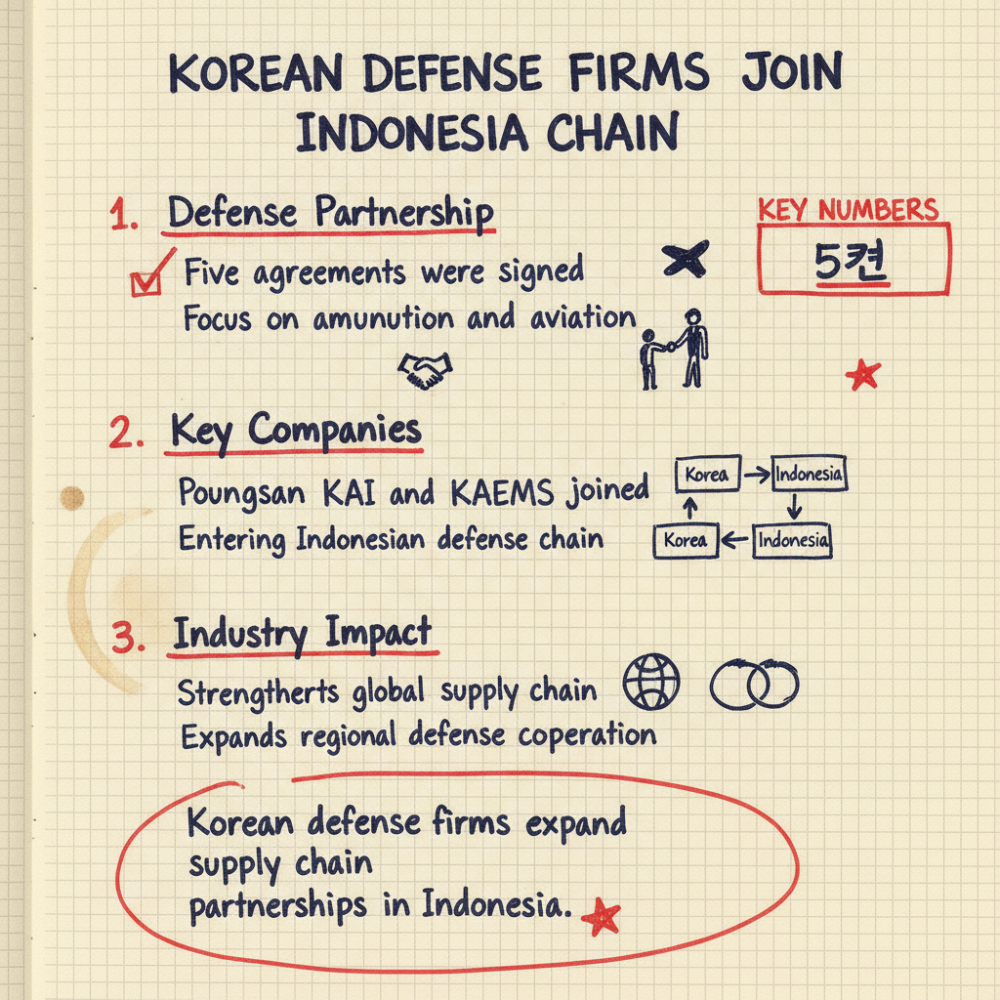
⭐ ① 풍산·KAI·KAEMS, 인도네시아 방산 공급망 합류핵심 내용: 풍산과 KAI, KAEMS가 인도네시아 방산 공급망에 합류하며 탄약 및 항공 분야에서 총 5건의 협약을 체결했습니다.
추진 배경: 인도네시아와의 방산 분야 협력을 강화하고 현지 탄약 및 항공 공급망을 구축하기 위해 추진되었습니다.
시사점: 국내 방산 기업들의 인도네시아 현지 공급망 진입을 통해 항공 및 탄약 관련 협력이 더욱 확대될 전망입니다.
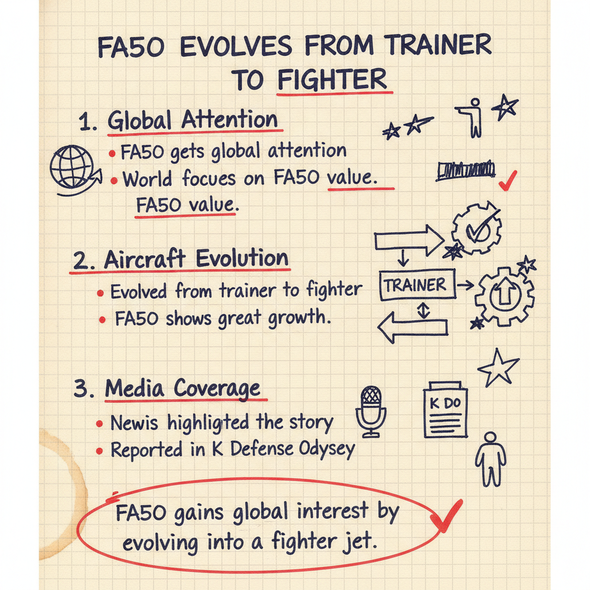
② 세계의 주목을 받는 FA-50의 진화핵심 내용: 국산 FA-50이 훈련기에서 전투기로 진화하며 전 세계의 주목을 받고 있습니다.
추진 배경: 뉴시스는 K방산 오디세이를 통해 FA-50 기종의 발전 과정을 조명했습니다.
시사점: 훈련기에서 전투기로 발전한 FA-50의 가치에 세계적인 관심이 집중되고 있습니다.
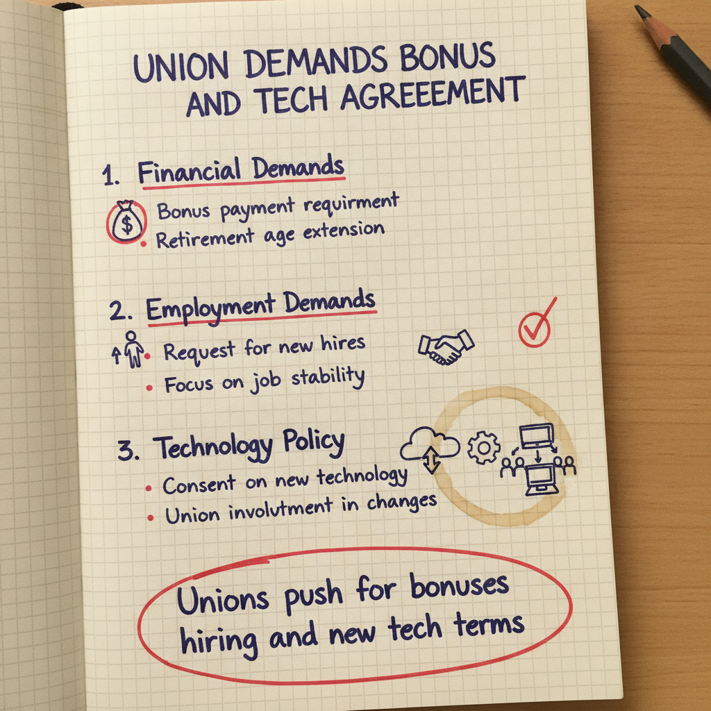
③ 노조, 성과급·정년연장 및 신기술 적용 합의 요구핵심 내용: 노동조합이 성과급 지급, 정년연장, 신규채용을 요구했습니다. 더불어 신기술 적용에 대한 노사 간 합의도 함께 요구했습니다.
추진 배경: 노사 협상 과정에서 노동조건 개선과 고용 안정을 확보하기 위해 주요 요구안을 제출했습니다.
시사점: 보상 및 고용 이슈와 함께 기술 변화에 따른 작업 환경 조정이 핵심 협상 과제로 떠올랐습니다.
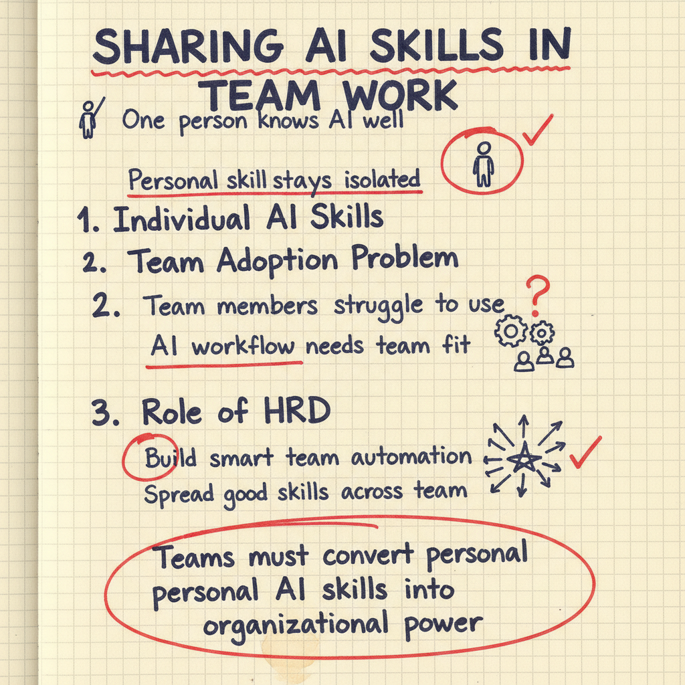
④ 조직 내 개인의 AI 노하우 확산과 업무 자동화 문제핵심 내용: 한 개인의 AI 활용 노하우가 팀 전체로 확장되지 않는 문제를 다룹니다. AI 스킬 및 업무 자동화를 조직 차원으로 확대하는 방안을 포함합니다.
추진 배경: 기아 한진규 HRD 책임매니저가 구글 뉴스 및 오픈애즈 HR인사이트를 통해 해당 콘텐츠를 전달했습니다.
시사점: 개인의 AI 활용 능력에 그치지 않고 조직 전체의 업무 자동화로 이어지도록 HRD 차원의 지원이 필요합니다.
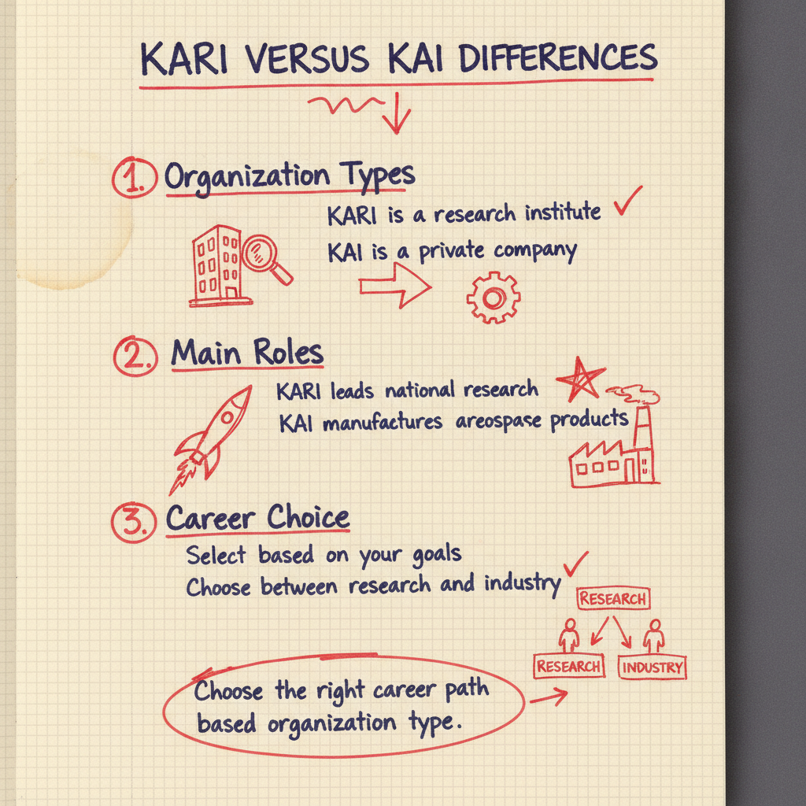
⑦ 한국항공우주연구원과 한국항공우주산업의 차이점핵심 내용: 국가 연구기관인 한국항공우주연구원과 기업인 한국항공우주산업의 역할 및 성격 차이를 다룹니다.
추진 배경: 항공우주 분야 구직자가 두 기관의 차이를 명확히 이해하도록 돕기 위해 작성되었습니다.
시사점: 지원자는 공공 연구와 민간 산업 중 본인의 커리어 목표에 맞는 곳을 선택해야 합니다.
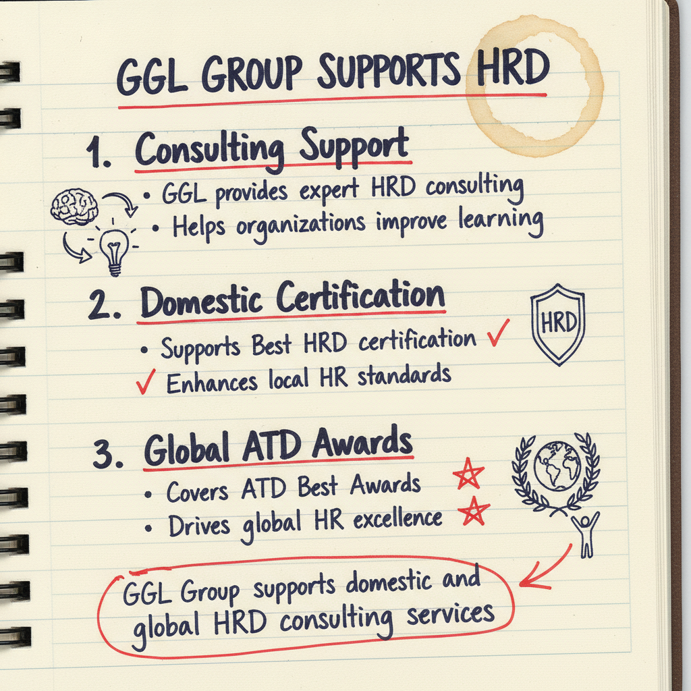
⑨ GGL리더십그룹, 국내외 HRD 컨설팅 지원핵심 내용: GGL리더십그룹이 국내 BEST HRD 인증과 글로벌 ATD BEST Awards 관련 전문 컨설팅을 지원합니다.
추진 배경: 국내외 우수 인적자원개발 인증 및 수상 지원을 통해 기업 성장을 도모하고자 실시되었습니다.
시사점: 전문 컨설팅을 활용하여 국내외 기준에 부합하는 HRD 체계를 구축할 수 있습니다.
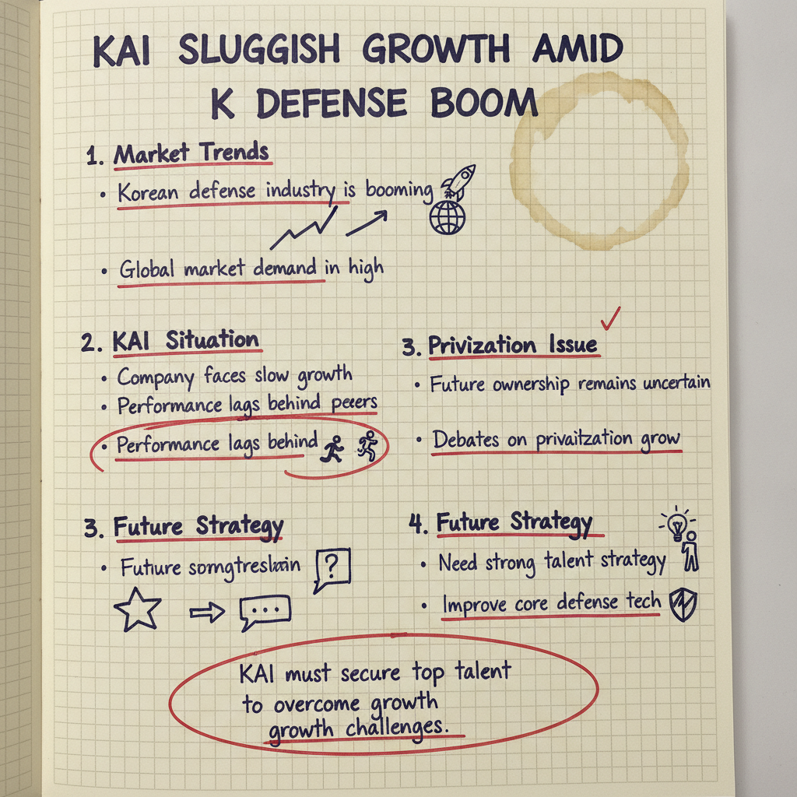
⑩ K방산 호황 속 KAI의 성과 정체와 민영화 논의핵심 내용: 국내 방산업계 전반의 호조에도 불구하고 한국항공우주산업은 홀로 성장이 주춤한 모습을 보이고 있습니다.
추진 배경: K방산의 질주 속에서 KAI의 상대적 부진이 이어지며 향후 민영화 추진 향방에 관심이 쏠리고 있습니다.
시사점: 핵심 인재 확보와 조직 정비를 통해 기술 경쟁력을 높이고 경영 불확실성에 대비해야 합니다.
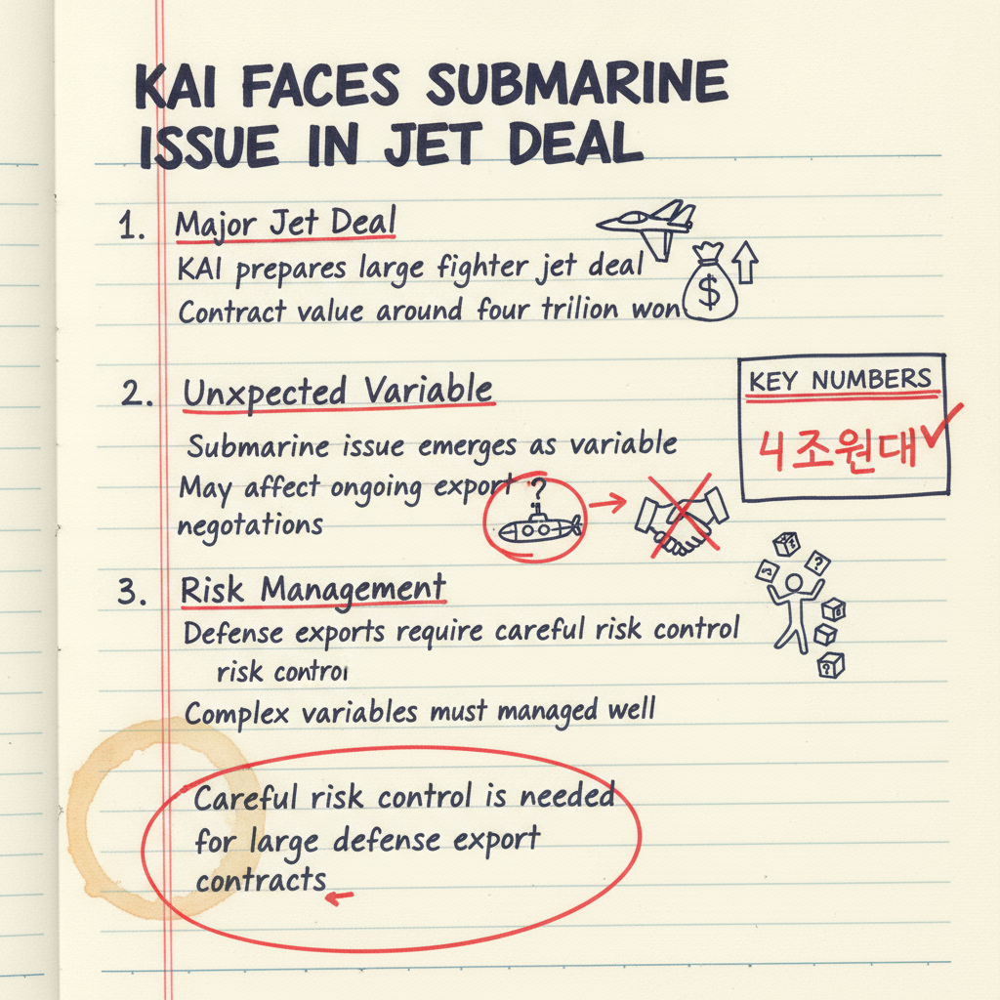
⑫ KAI 4조 원대 전투기 계약 앞 잠수함 변수 발생핵심 내용: 한국항공우주산업(KAI)이 4조 원 규모의 전투기 수출 계약을 앞두고 잠수함 사업 관련 변수에 직면했습니다.
추진 배경: 대형 전투기 수주 협상 과정에서 잠수함 연계 수주 등 복합적인 방산 외교 변수가 부각되었습니다.
시사점: 대형 방산 프로젝트 추진 시 단일 무기 체계 수출을 넘어 다각도의 리스크 관리 전략이 필요합니다.
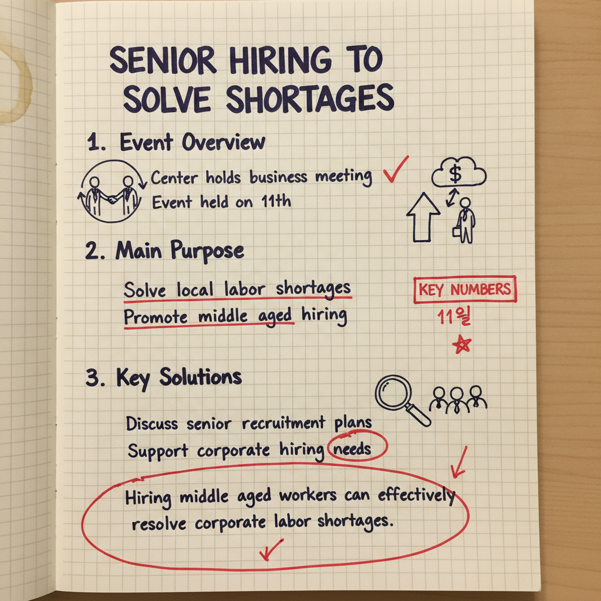
⑬ 전북중장년내일센터, 인력난 해소 위한 기업교류회 개최핵심 내용: 전북중장년내일센터가 오는 11일 중장년 채용을 통한 인력난 해결 방안을 논의하는 기업교류회를 개최합니다.
추진 배경: 기업의 심각한 인력난을 극복하기 위한 실질적인 방안으로 중장년층 채용 활성화가 추진되고 있습니다.
시사점: 중장년 구직자 활용이 기업의 구인난 해소와 지역 고용 시장 활성화에 기여할 것으로 기대됩니다.
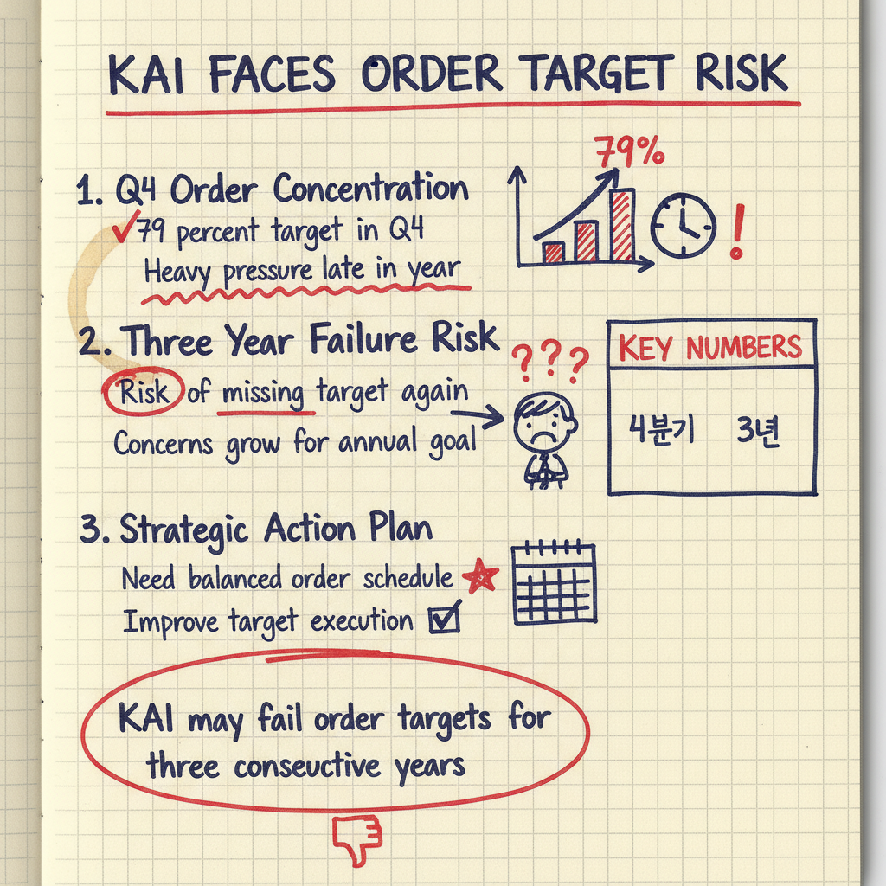
⑭ KAI 수주 목표 79% 4분기 집중…3년 연속 미달 우려핵심 내용: 한국항공우주산업(KAI)의 연간 수주 목표 중 79%가 4분기에 집중되어 있습니다. 이로 인해 3년 연속으로 목표 수주액을 달성하지 못할 것이라는 우려가 제기되고 있습니다.
추진 배경: 수주 물량이 연말에 과도하게 몰려 있어 목표 달성을 위한 부담이 가중된 상황입니다. 목표 미달이 지속될 경우 경영 성과 및 시장 신뢰도에 영향이 생길 수 있습니다.
시사점: 특정 분기에 편중된 수주 구조를 개선하고 연중 균등한 수주실적을 확보하는 전략이 필요합니다.
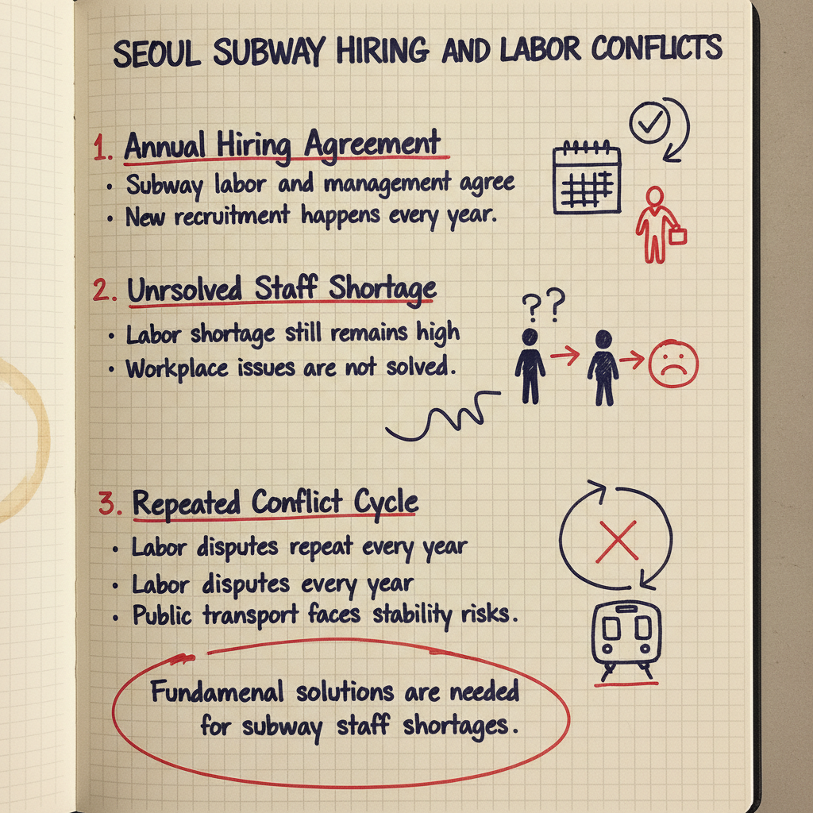
⑮ 서울지하철의 매년 반복되는 채용 합의와 인력난 갈등핵심 내용: 서울지하철은 매년 신규 채용에 합의하고 있음에도 불구하고 현장의 인력난과 노사 갈등이 지속해서 반복되고 있습니다.
추진 배경: 시민의 발 역할을 하는 지하철의 안정적 운영을 위해 매년 채용 합의를 이뤄냈으나 인력 부족 문제는 해소되지 않았습니다.
시사점: 형식적인 채용 합의를 넘어 인력 부족과 갈등이 매년 되풀이되는 근본적인 원인을 규명하고 해결책을 마련해야 합니다.
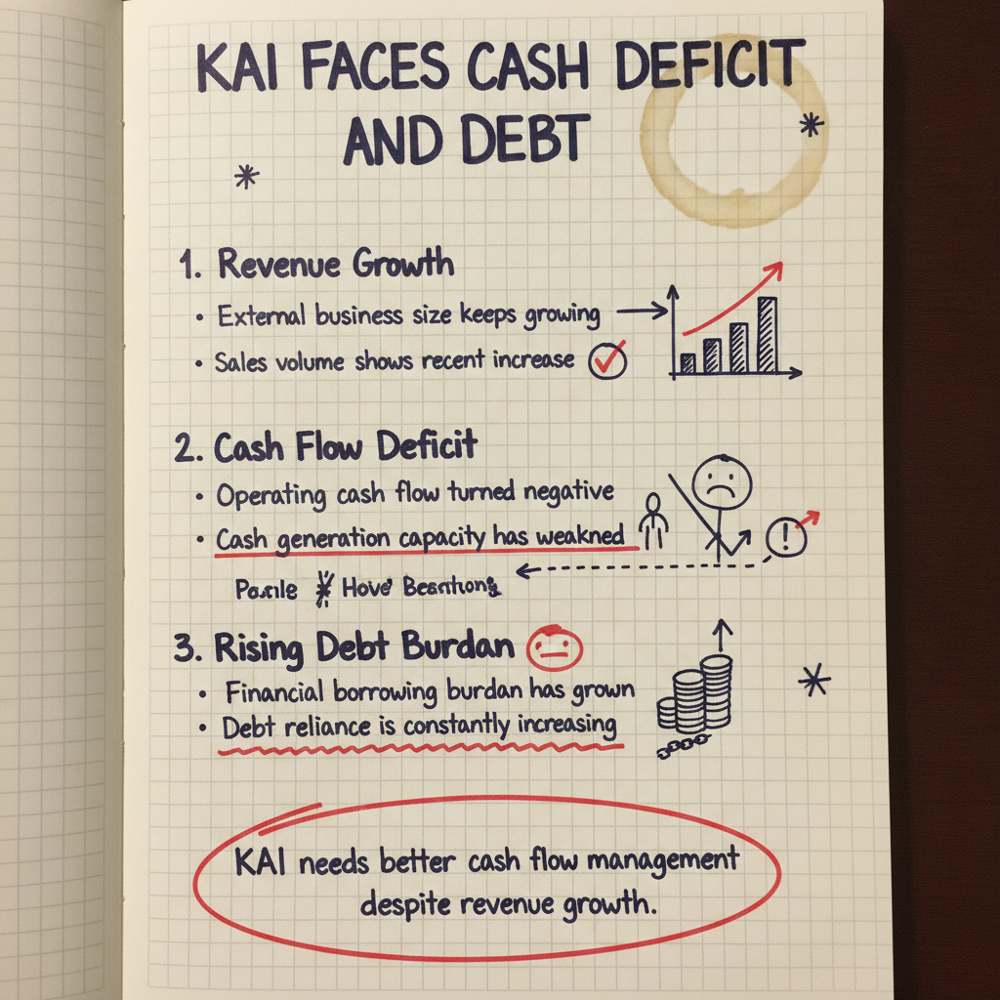
⑯ KAI, 외형 성장에도 영업현금 적자 및 차입 부담 가중핵심 내용: KAI가 외형적인 성장을 기록했으나 영업현금 흐름은 적자를 나타냈습니다. 이에 따라 차입에 대한 부담이 가중되고 있는 상황입니다.
추진 배경: 매출과 외형 규모는 확장되고 있으나 현금 창출력이 악화되었습니다. 결과적으로 외부 차입 의존도가 상승하는 원인이 되었습니다.
시사점: 외형적 매출 성장과 더불어 실질적인 현금 흐름 관리가 필요합니다. 재무 안정성을 높이기 위한 선제적 대응이 요구됩니다.
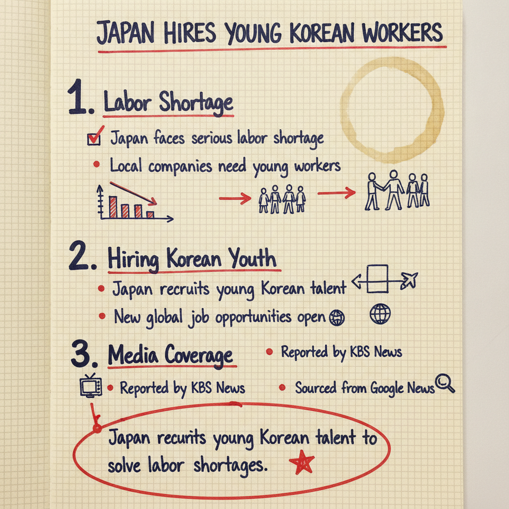
⑰ 일본의 인력난과 한국 청년 채용 확대핵심 내용: 일본이 현지의 심각한 인력난을 해결하기 위해 한국 청년 채용에 적극적으로 나서고 있습니다.
추진 배경: 일본 내 노동력 부족 현상이 지속되면서 해외 우수 인력의 확보가 필요해진 상황입니다.
시사점: 국내 청년들에게 해외 취업의 기회가 넓어지고 양국 간 인적 교류가 활성화될 것으로 보입니다.
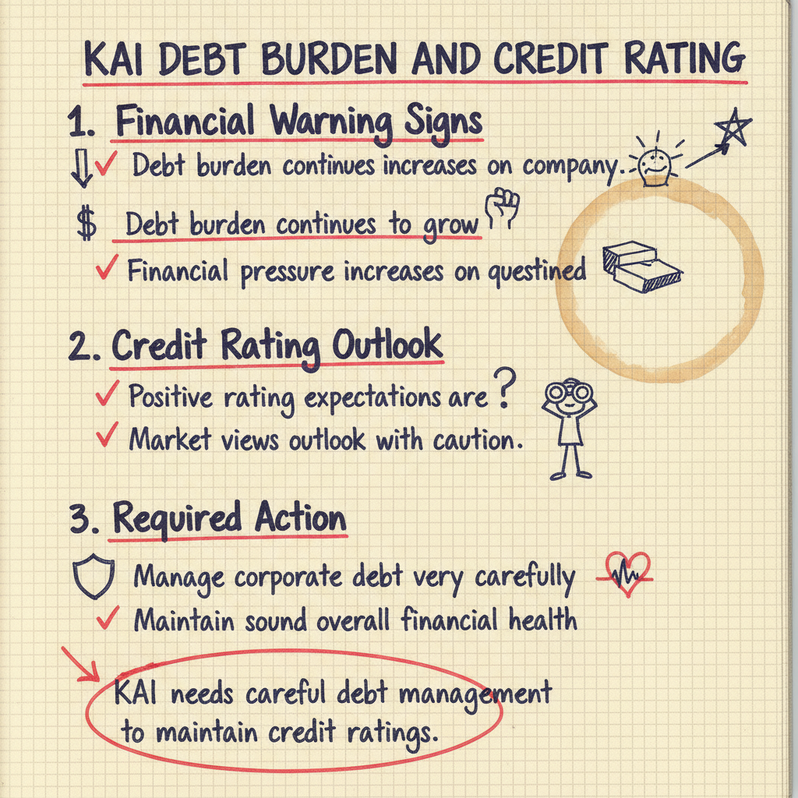
⑱ KAI 차입 부담 속 신용등급 전망 점검핵심 내용: KAI의 차입 부담이 증가함에 따라 긍정적인 신용등급 유지에 대한 우려가 제기되고 있습니다.
추진 배경: 차입금 확대로 재무적 리스크가 늘어남에 따라 신용도 평가 기준에 대한 재검토가 이루어지고 있습니다.
시사점: 재무 안정성 확보와 철저한 부채 관리를 통한 선제적 리스크 대응 전략이 요구됩니다.
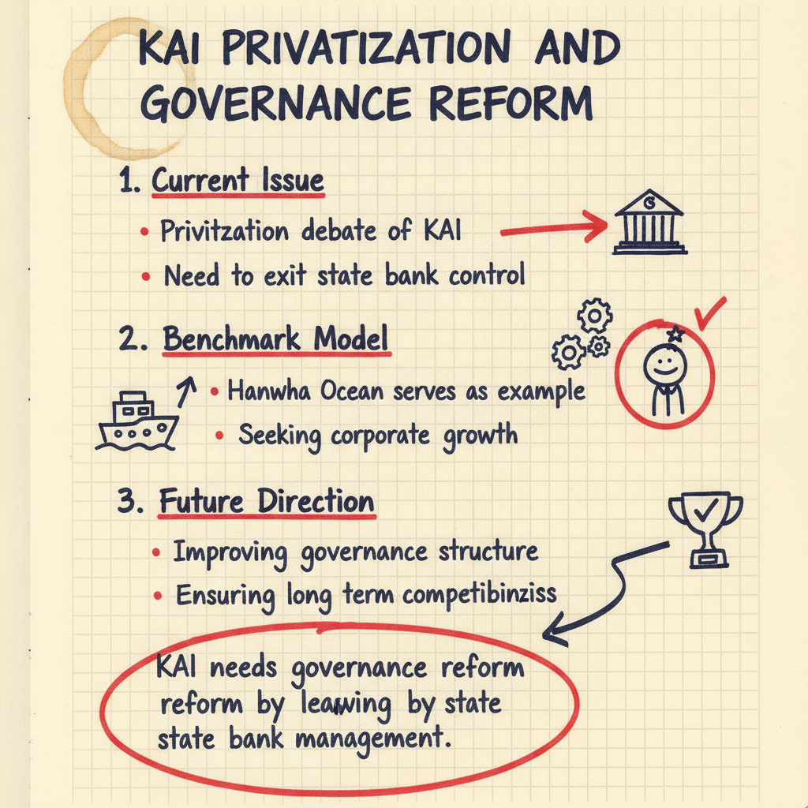
⑳ KAI 민영화 논란과 국책은행 탈피 필요성핵심 내용: 한국항공우주산업이 국책은행의 영향력에서 벗어나 민영화를 추진해야 한다는 주장이 제기되었습니다.
추진 배경: 한화오션의 사례를 본보기로 삼아 국책은행 관리 체제의 한계를 극복하려는 논의가 진행 중입니다.
시사점: 기업의 지속 가능한 성장을 위해 지배구조를 개선하고 민영화를 검토할 필요가 있습니다.
11.03 ~ 2026.11.09
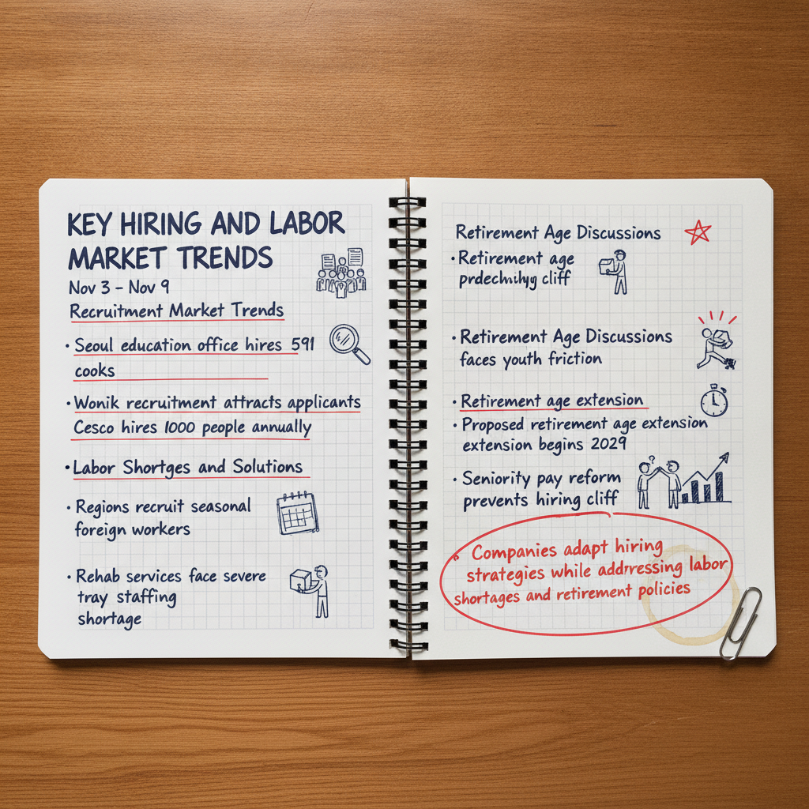
⬇️ 표지 슬라이드 다운로드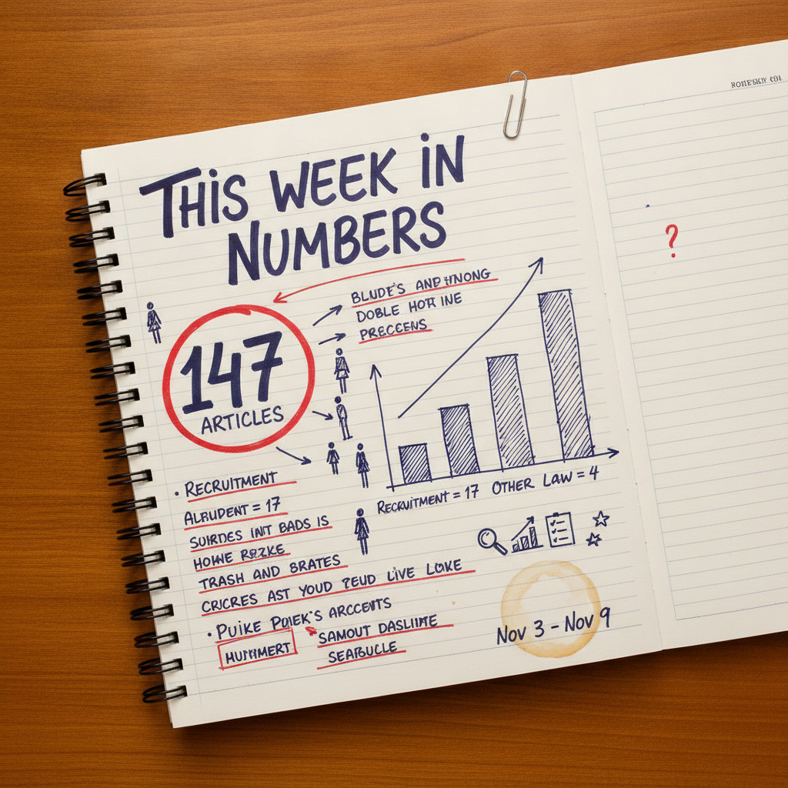
⬇️ 통계 슬라이드 다운로드총평
이번 주 HR 및 노동 시장은 정년 65세 연장 논의와 산업 전반의 심각한 인력난으로 인해 급격한 환경 변화를 겪었습니다. 또한 AI 기술 발전이 채용과 노무 관리에 본격적으로 적용되는 한편, 노사 갈등 및 인사 노무 리스크 점검의 중요성도 함께 대두되었습니다. 이에 따라 기업들은 직무 체험 채용, 숙련공 플랫폼 활용, 자동화 등 다각적인 인력 수급 및 관리 해법을 모색하고 있습니다.
시사점1
정년 65세 연장 논의와 연공급 개편 요구에 대비해 청년 신규 채용과 중장년 인력 활용이 조화를 이루도록 임금 체계 및 인력 구조 개편을 검토해야 합니다.
시사점2
현장의 구조적 인력난에 대응하기 위해 AI 및 자동화 기술을 도입하고, 숙련공 플랫폼 및 직무 체험 채용 등 다양한 채용 채널을 적극적으로 활용해야 합니다.
시사점3
노동부의 AI 수사 지원 도입과 기업 근로감독 사례에 대응하여 PIP 및 퇴사자 관리 등 인사 노무 관리 전반의 리스크와 법적 정당성을 철저히 점검해야 합니다.
📰 이번 주 주요 뉴스 요약 · 인포그래픽
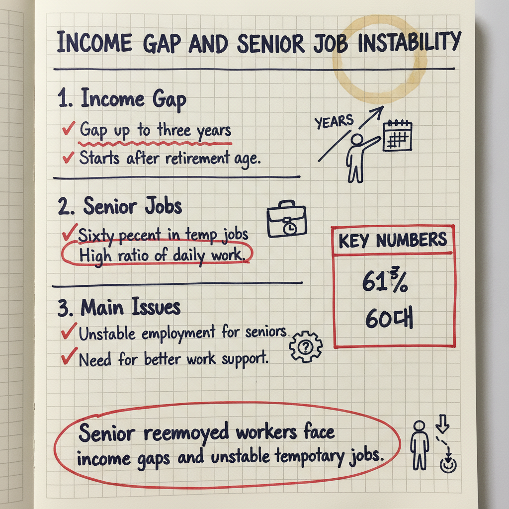
① 정년 후 소득 공백과 60대 재취업자의 고용 불안 현황핵심 내용: 정년 퇴직 후 연금 수급까지 최대 3년의 소득 공백이 발생하고 있으며, 60대 재취업자의 61%가 임시·일용직에 종사하고 있습니다.
추진 배경: 60대 재취업자 중 임시 및 일용직 비중이 높게 나타나는 구조적 이유와 관련 문제를 다루기 위해 작성되었습니다.
시사점: 정년 이후 소득 공백기를 보완하고 60대 재취업자의 고용 안정을 돕는 제도적 지원이 필요합니다.
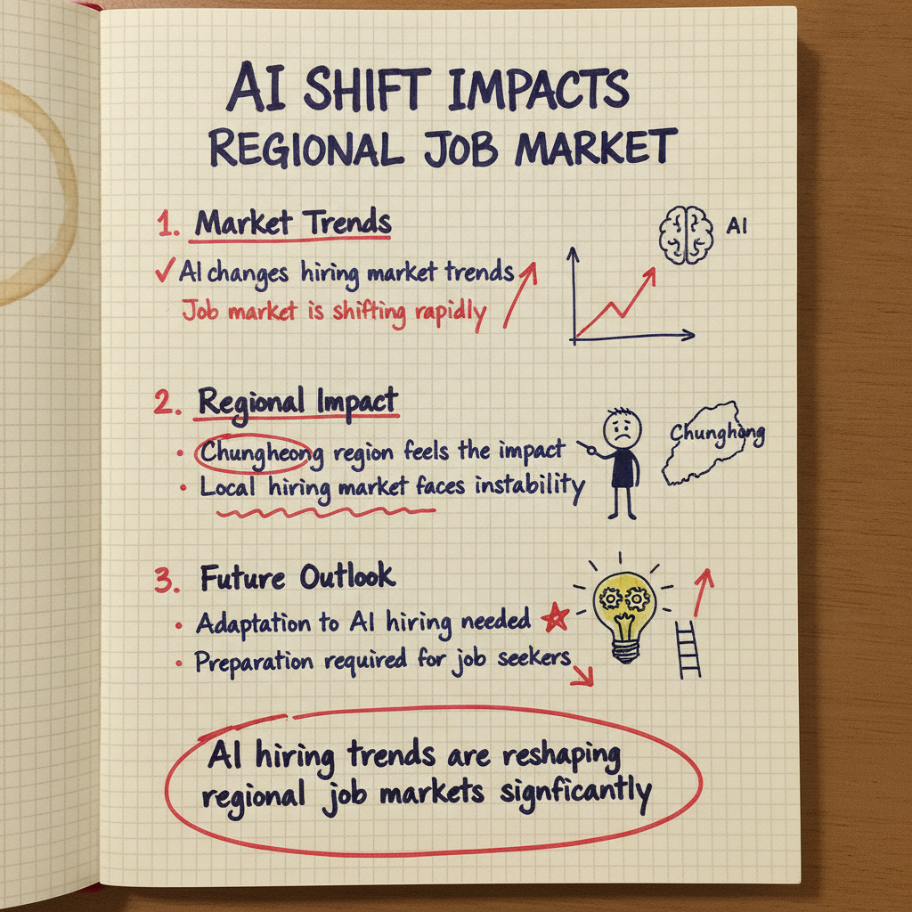
② AI 기반 채용 트렌드 변화와 충청권 취업시장 영향핵심 내용: 인공지능 기술의 도입으로 인해 채용시장의 트렌드가 변화하고 있습니다. 이러한 채용 트렌드의 변화는 충청권 취업시장에도 직접적인 영향을 주고 있습니다.
추진 배경: 채용시장에서 AI 활용이 늘어나면서 기존의 구인 및 구직 방식이 변하고 있습니다. 이에 따라 지역 취업시장의 변동성도 함께 커지고 있는 상황입니다.
시사점: 변화하는 AI 채용 환경에 맞춰 지역 차원의 고용 대응책 체계화가 필요합니다. 구직자 역시 새로운 채용 트렌드에 대한 철저한 대비가 요구됩니다.
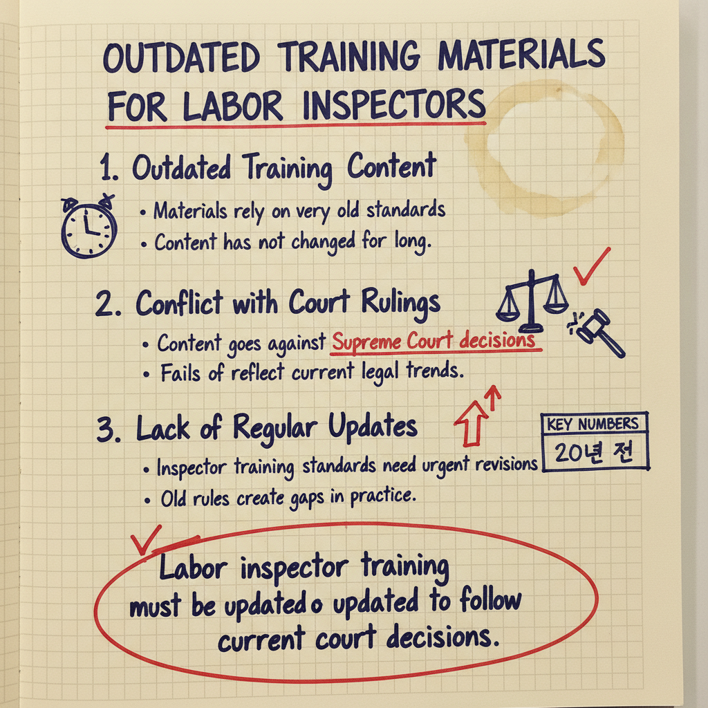
③ 20년 전 기준에 머무른 근로감독관 교육자료핵심 내용: 근로감독관 교육자료가 20년 전 기준에 머물러 대법원 판례에 역행하고 있습니다. 구시대적 내용으로 구성되어 법원의 최신 판례 흐름과 맞지 않는 상황입니다.
추진 배경: 근로감독관을 위한 교육 기준이 오랜 기간 개정되지 않고 그대로 유지되어 온 것으로 나타났습니다.
시사점: 노동 현장의 감독 신뢰성을 확보하기 위해 최신 대법원 판례를 반영한 교육자료 개정이 필요합니다.
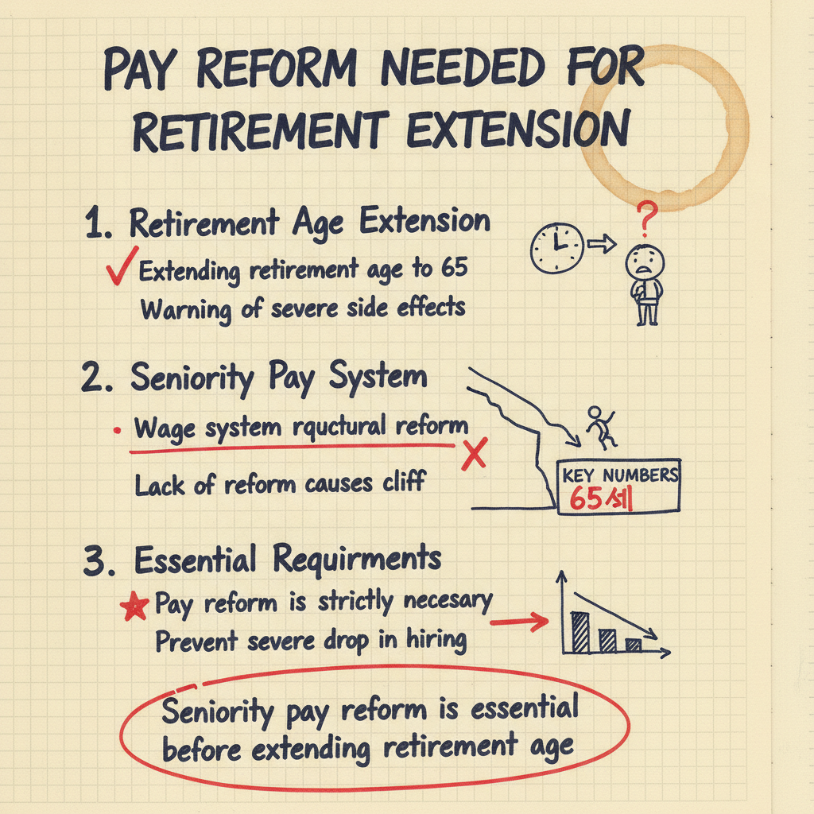
⑤ 연공급 개편 없는 정년 65세 연장의 부작용 경고핵심 내용: 연공급 체계 개편 없이 정년을 65세로 연장할 경우 심각한 채용 절벽 등 부작용이 발생할 수 있다는 경고가 나왔습니다.
추진 배경: 정년 65세 연장 추진 시 임금 체계 개편이 필수적이라는 논의가 리드경제를 통해 보도되었습니다.
시사점: 채용 절벽을 방지하고 정년 연장 정책이 안착하려면 연공급 체계 개편이 선행되어야 합니다.
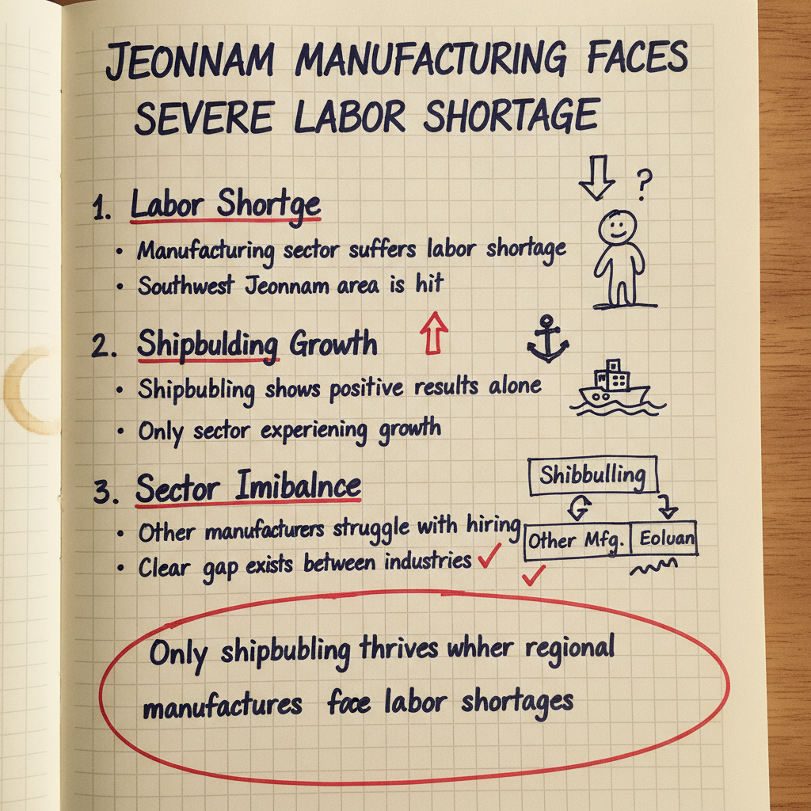
⑦ 전남 서남부 제조업 인력난 속 조선업만 호조핵심 내용: 전남 서남부 지역 제조업계가 심각한 인력난을 겪고 있는 가운데 조선업만 유일하게 긍정적인 성과를 내고 있습니다.
추진 배경: 지역 내 업종별 성과 차이가 뚜렷해짐에 따라 조선업 외 타 제조업의 인력 부족 상황이 광주드림 보도를 통해 드러났습니다.
시사점: 특정 업종의 호황과 달리 다른 제조업 분야의 인력난이 심각하므로 지역 산업 전반에 대한 균형 있는 지원책이 필요합니다.
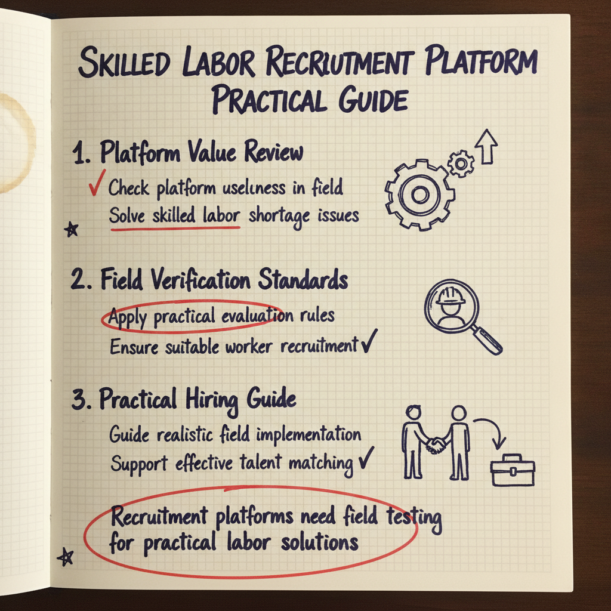
⑧ 숙련공 채용 플랫폼의 인력난 해소 실용성 검증핵심 내용: 숙련공 채용 플랫폼이 인력난 해소의 만능 해법인지 현장 검증 기준을 바탕으로 실용 가이드를 제시했습니다.
추진 배경: 산업 현장의 인력난 문제 속에서 채용 플랫폼의 실제 효용성을 다각도로 검토할 필요성이 커졌습니다.
시사점: 단순 플랫폼 활용을 넘어 현장에 맞는 실용적 검증 절차를 구축해야 성공적인 채용이 가능합니다.
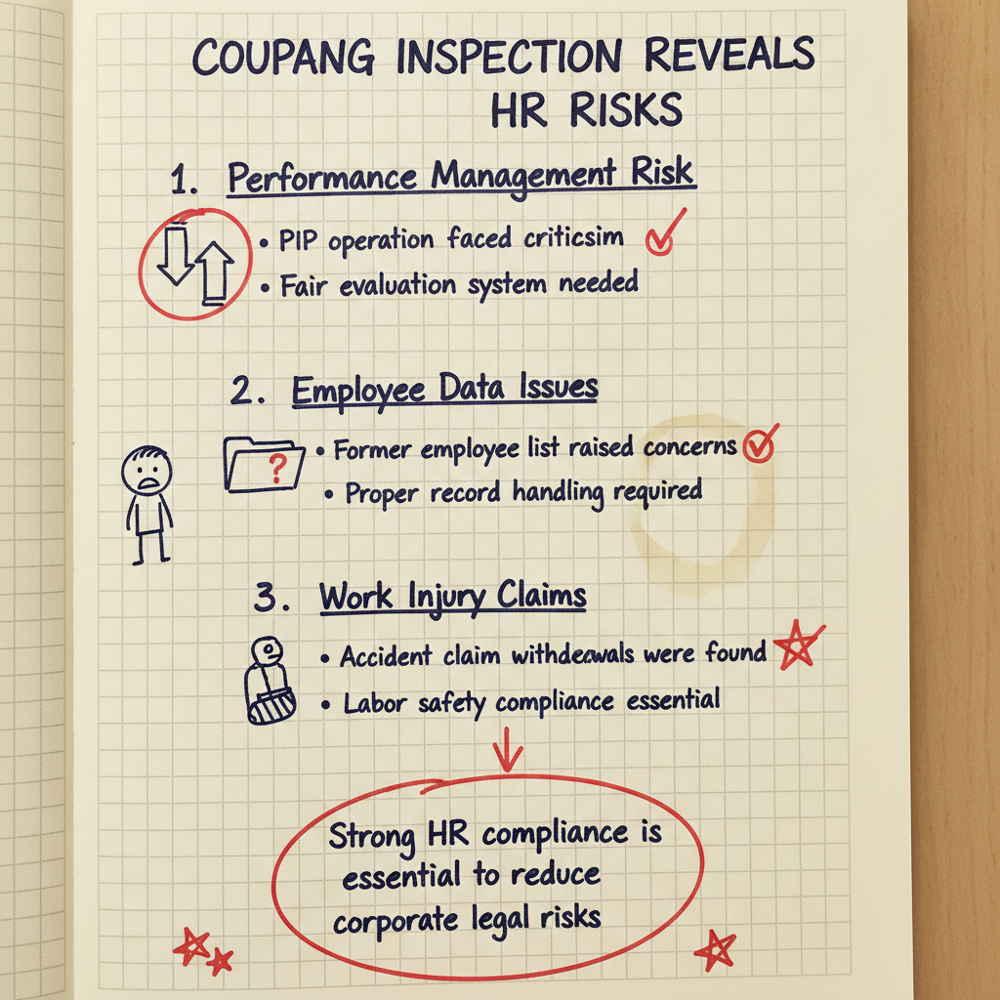
⑨ 쿠팡 감독서 PIP 및 퇴사자 명단 등 인사노무 리스크 적발핵심 내용: 쿠팡에 대한 정부 감독 과정에서 PIP 운용, 퇴사자 명단 관리, 산재 취하 요구 등 다수의 인사노무 리스크가 지적되었습니다.
추진 배경: 월간노동법률 보도에 따르면 쿠팡의 인사 관리 방식에 대한 문제의식이 대두됨에 따라 감독 조사가 진행되었습니다.
시사점: 부적절한 노무 관리 행위는 심각한 기업 리스크로 이어질 수 있으므로 철저한 인사 컴플라이언스 점검이 필요합니다.
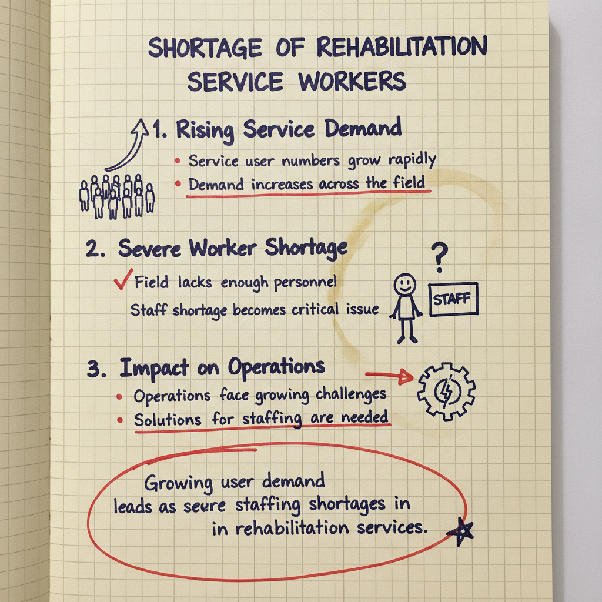
⑩ 발달재활서비스 수요 급증에 따른 현장 인력난 심화핵심 내용: 발달재활서비스 이용자가 빠르게 증가하면서 현장의 인력 부족 현상이 심화되고 있습니다.
추진 배경: 서비스 수요가 늘어남에 따라 현장에서는 이를 감당할 인력이 부족해 운영상 주요 문제로 떠올랐습니다.
시사점: 원활한 서비스 제공과 운영을 위해 현장 전문 인력을 확충하고 수급을 개선하는 대책이 필요합니다.
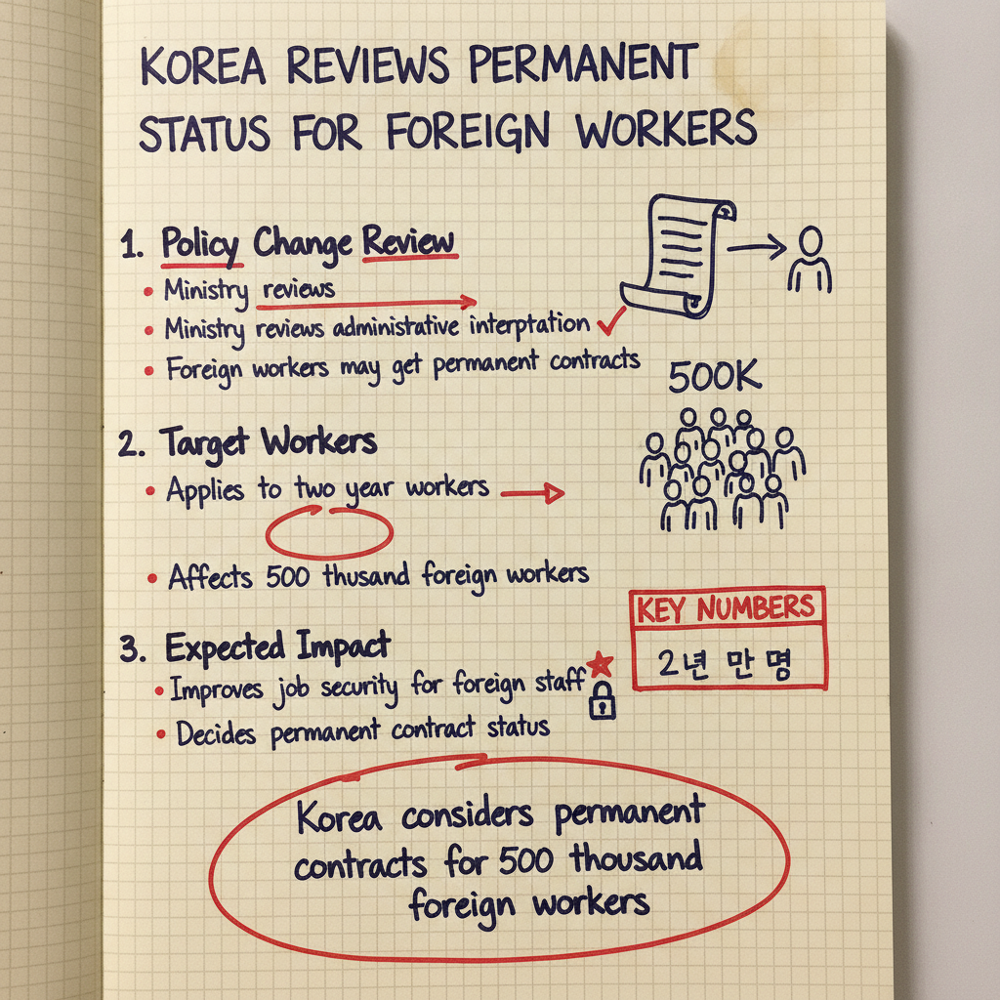
⑫ 2년 이상 근무 외국인 무기계약직 전환 검토핵심 내용: 고용노동부가 2년 넘게 근무한 외국인 근로자의 무기계약직 전환을 위해 행정해석 변경을 검토하고 있습니다.
추진 배경: 2년 이상 일한 외국인 근로자의 무기계약직 전환 가능성에 대한 논의가 진행되며 관련 사안이 수면 위로 떠올랐습니다.
시사점: 행정해석 변경 결과에 따라 50만 명에 달하는 외국인 근로자의 무기계약직 전환 여부가 최종 결정될 예정입니다.
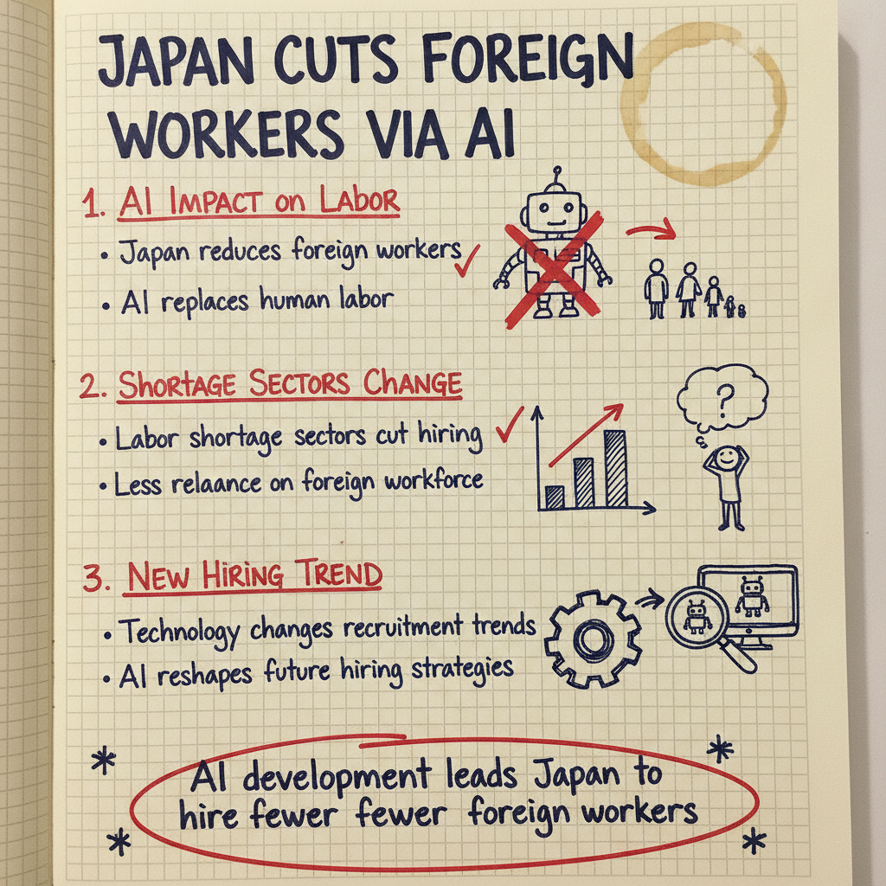
⑬ 일본, AI 발달로 인력난 업종도 외국인 채용 축소핵심 내용: 일본 내 일손 부족 업종에서조차 외국인 노동자 채용을 줄이는 현상이 나타나고 있습니다.
추진 배경: 인공지능의 급격한 발전이 외국인 노동자 감소 및 의존도 축소의 주요 원인으로 작동하고 있습니다.
시사점: AI 기술 도입이 본격화되면서 구인난 업종의 인력 채용 구조에도 큰 변화가 시작되었습니다.
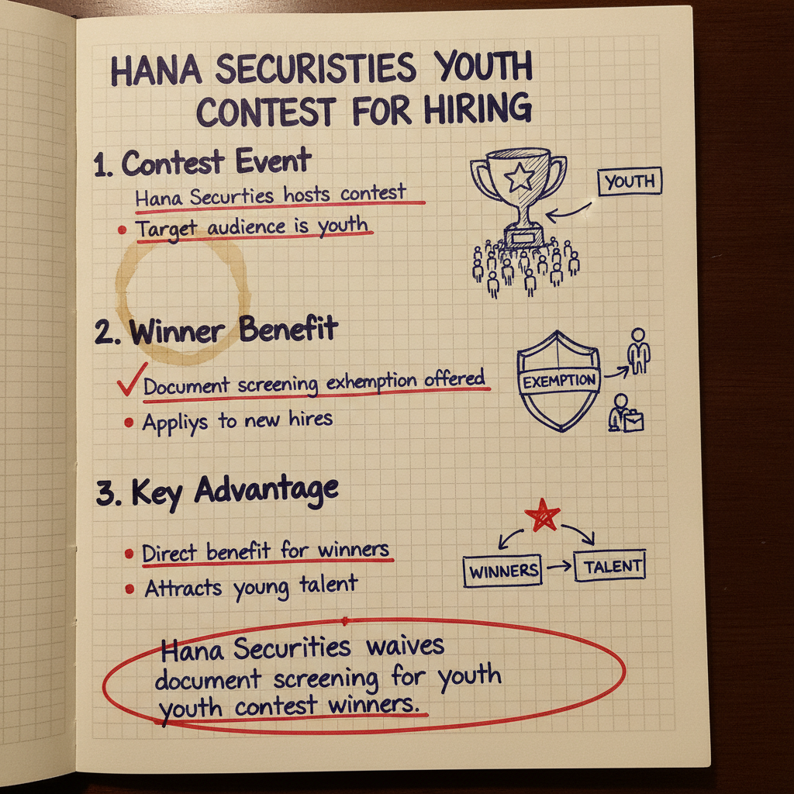
⑭ 하나증권 청년 공모전 입상자 신입채용 서류전형 면제핵심 내용: 하나증권에서 청년을 대상으로 공모전을 개최합니다. 공모전 입상자에게는 신입채용 서류전형 면제 혜택을 제공합니다.
추진 배경: 청년층의 참여를 유도하고 입상자에게 실질적인 혜택을 제공하기 위해 개최되었습니다.
시사점: 서류전형 면제 혜택을 통해 우수한 청년 인재의 채용 참여를 효과적으로 끌어올릴 수 있습니다.
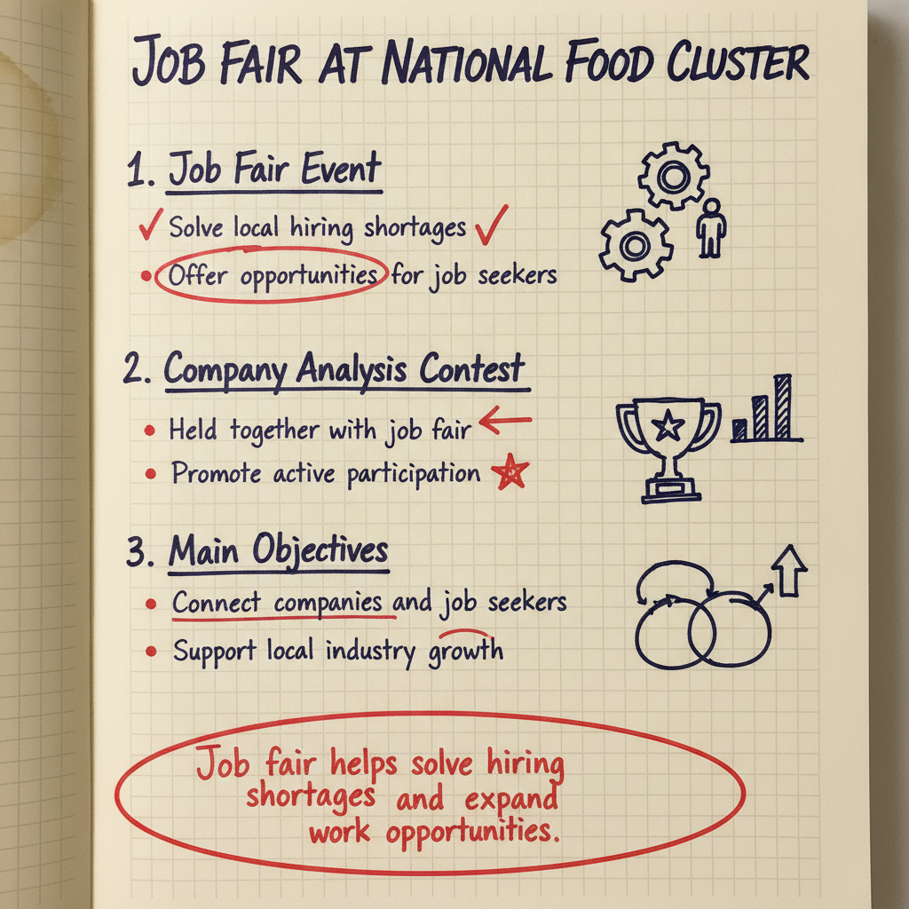
⑱ 국가식품클러스터 채용박람회 개최 및 인력난 해소 추진핵심 내용: 국가식품클러스터에서 구직 기회 확대를 위한 채용박람회와 기업분석 경진대회를 함께 개최합니다.
추진 배경: 지역 식품 산업 단지의 인력난을 해소하고 구직자들에게 폭넓은 채용 기회를 제공하기 위해 마련했습니다.
시사점: 채용박람회와 기업분석 경진대회를 병행하여 기업과 구직자 간 채용 미스매치를 완화할 것으로 기대됩니다.
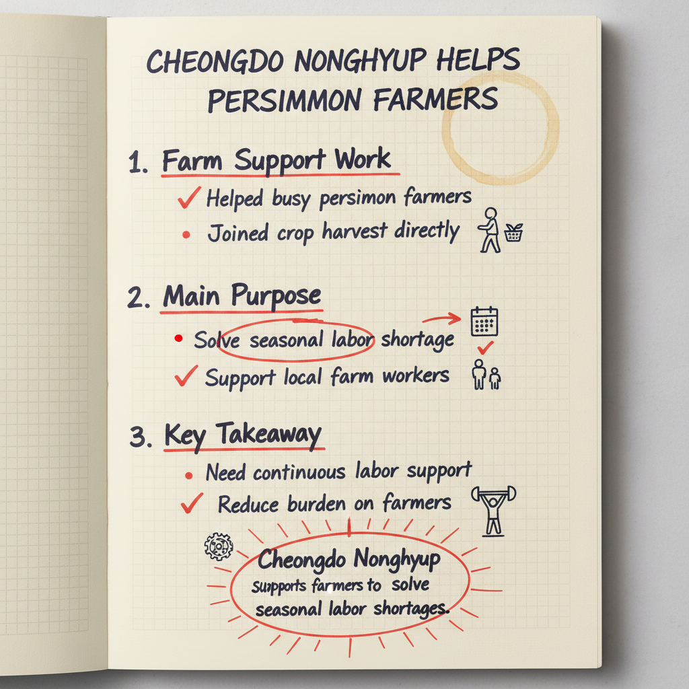
⑲ 청도농협 수확철 감 농가 인력난 해소 지원핵심 내용: 청도농협이 수확철을 맞아 일손이 부족한 감 농가를 직접 찾아가 수확 작업을 도왔습니다.
추진 배경: 농번기 수확철에 일손 부족으로 어려움을 겪는 지역 농가를 지원하기 위해 진행되었습니다.
시사점: 계절적 인력난을 겪는 농가를 돕기 위해 지역 기관의 지속적인 일손 지원 노력이 필요합니다.
10.27 ~ 2026.11.02
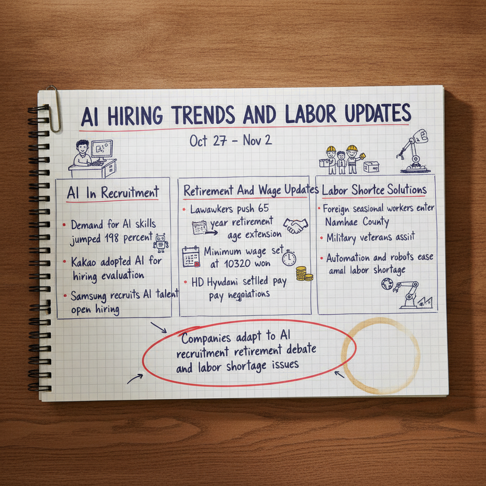
⬇️ 표지 슬라이드 다운로드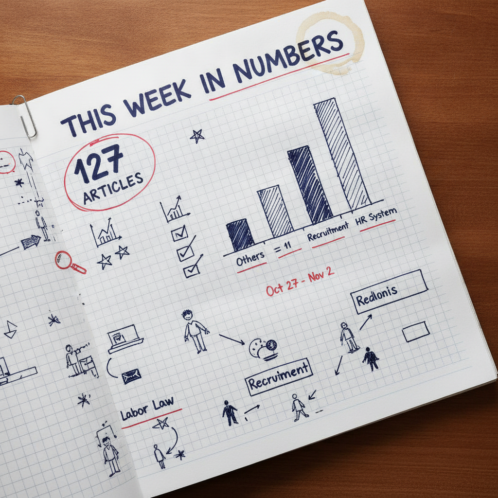
⬇️ 통계 슬라이드 다운로드총평
이번 주에는 농촌, 건설, 의료 등 전 산업 분야에서 심각해진 인력난을 해소하기 위해 외국인 인력 활용, 기관 간 협력, 자동화 및 기술 도입 등 다각적인 방안이 집중적으로 논의되었습니다. 한편 채용 시장에서는 AI 역량 요구와 AI 기반 평가 절차 도입이 급증하며 선발 체계의 변화가 가속화되었습니다. 또한 65세 정년 연장 법안 추진과 근로감독관 내부 교육 문제 등 고용 및 노동 관련 법·제도적 이슈에 대한 관심도 지속되었습니다.
시사점1
채용 공고 내 AI 역량 요구가 늘고 카카오 등 일부 기업에서 AI 기반 평가 절차를 도입하는 등 채용 프로세스의 디지털 전환이 확대되고 있으므로 기업 실정에 맞는 선발 체계 개편을 검토해야 합니다.
시사점2
건설, 농업, 중소기업 등 다수 업종에서 인력난이 지속됨에 따라 E-9 등 외국인 근로자 활용 조건 점검, 지자체 및 유관 기관 협력, 신규 인력 양성 등 다양한 인력 수급 채널을 모색할 필요가 있습니다.
시사점3
65세 정년 연장에 대한 연내 법안 처리 추진과 노동계의 입법 요구가 이어지고 있으므로 정년 연장 논의 동향과 고령 인력 활용, 임금 및 일자리 질 개선 관련 제도를 선제적으로 점검해야 합니다.
📰 이번 주 주요 뉴스 요약 · 인포그래픽
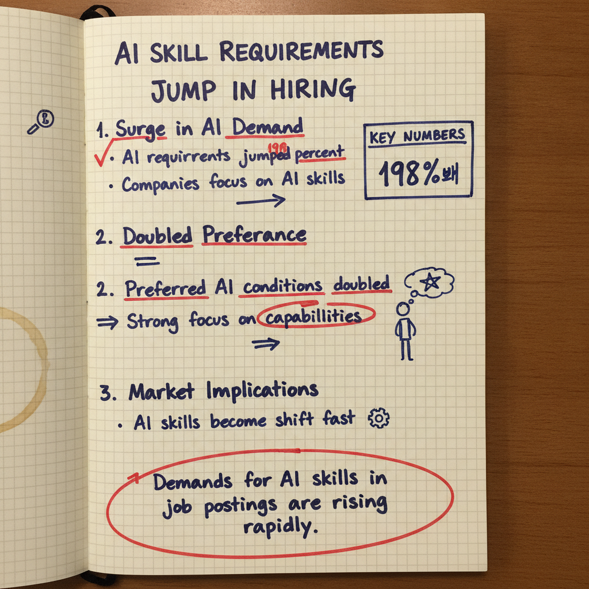
② 채용공고 내 AI 역량 요구 및 우대조건 급증핵심 내용: 채용공고에서 AI 역량을 요구하는 비중이 198% 급증했습니다. 또한 채용 우대조건에 AI 역량을 명시한 비율도 2배 늘어났습니다.
추진 배경: 채용 시장 전반에서 AI 역량 요구와 우대조건이 동시에 크게 늘어나는 추세가 반영되었습니다.
시사점: 기업들의 인재 채용 시 AI 활용 능력 평가와 관련 역량 확보가 주요 과제로 떠오르고 있습니다.
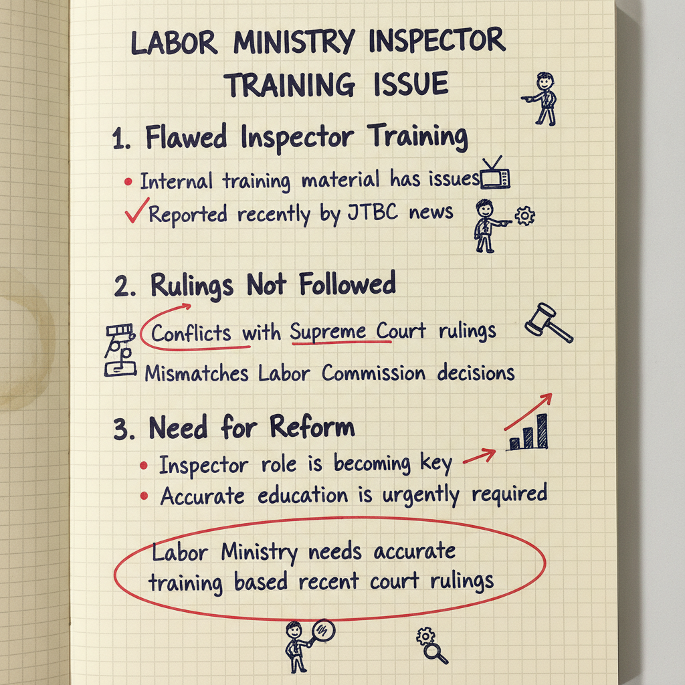
③ 노동부 근로감독관 교육자료 부실 논란핵심 내용: 고용노동부의 근로감독관 내부 교육자료가 대법원 판례 및 노동위원회 판정 취지와 어긋난 것으로 확인되었습니다.
추진 배경: 근로감독관의 역할이 점차 중요해지는 상황에서 JTBC 보도를 통해 내부 교육의 문제점이 제기되었습니다.
시사점: 현장 감독의 정확성과 신뢰성을 확보하기 위해 최신 판례를 반영한 교육 체계 개선이 필요합니다.
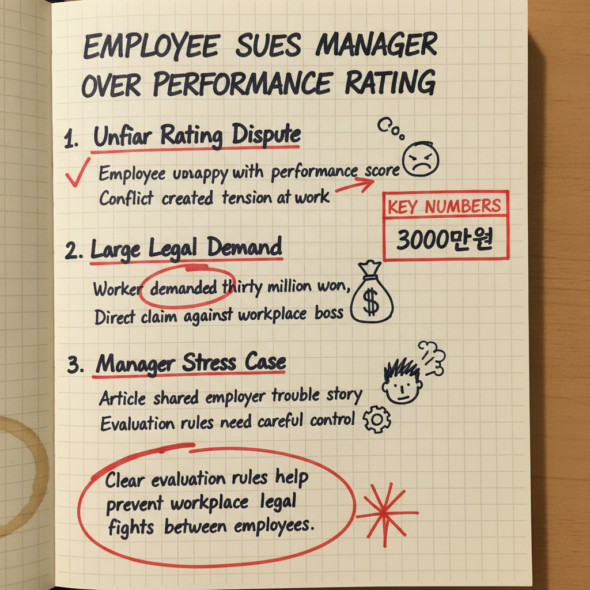
④ 인사평가 불만으로 상사에 3000만원 청구한 사례 발생핵심 내용: 인사평가 결과에 불만을 품은 직원이 상사를 상대로 3000만 원을 청구한 사례가 발생했습니다. 이 기사는 평가 문제로 인한 상사와의 갈등 및 고충을 다루었습니다.
추진 배경: 한국경제의 사장님 고충백서를 통해 인사평가 과정에서 발생하는 조직 내부의 실제 갈등 사례가 소개되었습니다.
시사점: 인사평가에 대한 수용성을 높이지 못할 경우 법적 분쟁이나 관리자의 고충으로 이어질 수 있으므로 평가 체계의 객관성 확보가 필요합니다.
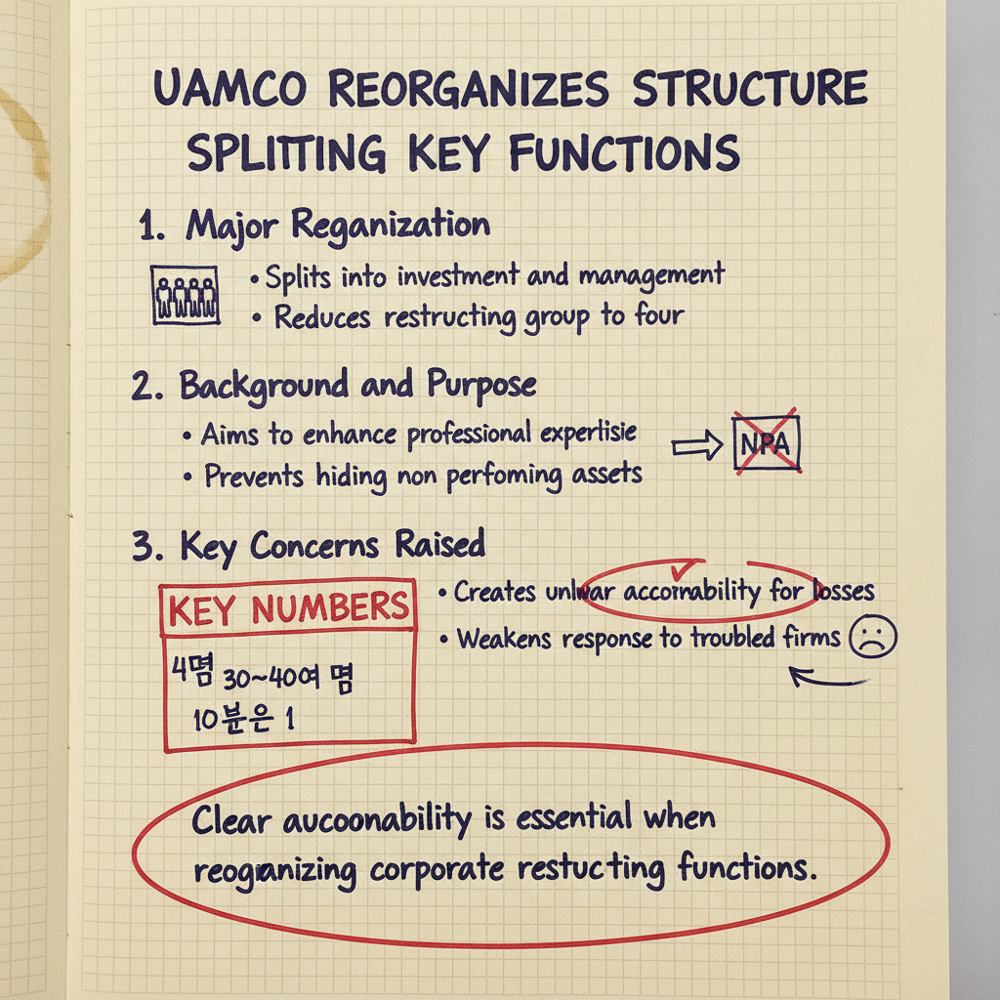
⑤ 유암코 대규모 조직개편, 구조조정 기능 분할 우려핵심 내용: 유암코가 기존 자산별 조직을 투자그룹과 관리그룹으로 이원화하고 기업구조조정(CR)그룹 인원을 4명으로 대폭 축소했습니다. 실무가 여러 부서로 분산되면서 위기 기업 대응 능력이 약화될 수 있다는 지적이 나옵니다.
추진 배경: 조직의 전문성을 강화하고 투자와 관리 부문의 분리를 통해 부실 은폐 등의 부작용을 예방하려는 취지입니다. 유암코 측은 공백을 막기 위해 포트폴리오 기업별 태스크포스(TF)를 운영하겠다고 밝혔습니다.
시사점: 투자 및 관리 주체가 분리되면서 펀드 운용 책임 및 손실에 대한 책임 소재가 모호해질 우려가 있습니다. 조직 개편 시 부서 간의 명확한 역할 정의와 협력 체계 구축이 중요함을 시사합니다.
⑦ 여당 이용우 의원, 65세 정년연장 법안 연내 처리 추진핵심 내용: 여당 이용우 의원이 65세 정년연장 법안의 연내 처리를 추진하겠다고 밝혔습니다.
추진 배경: 이용우 의원은 65세 정년연장을 사회적 변화에 따른 불가피한 선택이라고 강조했습니다.
시사점: 연내 법률 개정이 추진됨에 따라 기업의 인력 운용 및 고용 정책 재편 논의가 본격화될 것으로 보입니다.
⑧ 사람인 2026 하반기 삼성전자 협력사 온라인 채용박람회 개최핵심 내용: 사람인이 2026년 하반기에 삼성전자 협력사를 대상으로 온라인 채용박람회를 개최합니다.
추진 배경: 삼성전자 협력사의 채용을 지원하기 위해 온라인 박람회 형태로 기획되었습니다.
시사점: 온라인 채용 방식을 통해 삼성전자 협력사의 인재 확보가 촉진될 것으로 보입니다.
⑨ 금속노조 65세 법정 정년연장 입법 촉구핵심 내용: 금속노조가 법정 정년을 65세로 연장하는 법안의 신속한 입법 추진을 촉구했습니다.
추진 배경: 노조의 주장은 법정 정년을 65세로 연장하는 입법 조치 마련에 집중되어 있습니다.
시사점: 정년연장 관련 법안 요구가 구체화됨에 따라 노사 간 관련 논의가 본격화될 것으로 보입니다.
⑩ SK하이닉스 채용 방식 변화와 취업준비생의 혼란핵심 내용: SK하이닉스의 채용 전형 방식이 크게 달라지면서 합격 기준을 예측하기 어려워진 취업준비생들이 혼란을 겪고 있습니다.
추진 배경: 기업의 인재 채용 전략 및 전형 방식 변경에 따라 기존의 합격 공식이 더 이상 적용되지 않고 있습니다.
시사점: 변화하는 채용 환경에 대응하기 위해 구직자와의 명확한 소통과 평가 기준 안내가 필요합니다.
⑪ 2026년 최저임금 인상과 건설 노임단가 변화핵심 내용: 2026년 최저임금이 1만320원으로 시행되며 건설 노임단가는 5.2% 인상됩니다.
추진 배경: 건설 현장 내 숙련공의 고령화가 지속해서 진행되고 있습니다.
시사점: 노임단가 인상과 숙련공 고령화가 맞물려 건설 현장 원가 구조에 변화가 생길 것으로 보입니다.
⑫ 카카오 AI 기반 채용 절차 개편 추진핵심 내용: 카카오가 면접관 대신 AI가 면접을 진행하고 평가하는 방식으로 채용 절차를 개편합니다.
추진 배경: 인공지능 기술을 채용 전반에 도입하여 평가 절차를 효율화하고자 합니다.
시사점: 주요 기업의 AI 채용 도입이 확대되는 계기가 될 것으로 전망됩니다.
⑬ 농업 인력난 해소를 위한 내국인 인건비 지원 제안핵심 내용: 농업 현장의 심각한 인력 부족을 해소하기 위해 내국인 인력에 대한 인건비 지원 방안이 제안되었습니다.
추진 배경: 현재 농업 현장의 인력난이 매우 심각하여 노동력 확보를 위한 대책 마련이 시급한 상황입니다.
시사점: 내국인의 농업 유입을 촉진하고 일자리 창출과 현장 인력난을 동애 개선하는 계기가 될 수 있습니다.
⑭ 교보생명과 케이뱅크 청년채용 유공 금융위원장 표창 수상핵심 내용: 교보생명과 케이뱅크가 제11회 금융의 날을 맞아 청년 채용 확대 및 포용적 채용 제도 운영 공로로 금융위원장 표창을 받았습니다.
추진 배경: 금융위원회는 포용금융 부문에 청년채용 확대 분야를 신설하고 채용 규모와 지역인재 및 장애인 채용 등 종합 평가를 진행했습니다.
시사점: 비대면 영업 확대와 인공지능 전환 등 어려운 환경 속에서도 금융권의 지속적인 청년 인재 발굴 노력이 강조되고 있습니다.
⑮ 구재이 집행부의 신규직원양성학교를 통한 인력난 해소 방안핵심 내용: 구재이 집행부는 인력난 극복을 위한 주요 해소법으로 신규직원양성학교를 추진하고 있습니다.
추진 배경: 현장의 심각한 인력난 문제를 해결하고 필요한 인재를 효과적으로 확보하기 위해 마련했습니다.
시사점: 신규 직원을 직접 교육 및 양성하는 맞춤형 접근법이 인력 부족 해소의 대안이 될 수 있습니다.
⑯ 건설 현장 인력난 완화를 위한 E-9 외국인 근로자 채용 점검핵심 내용: 건설 현장의 심각한 인력난을 해소하기 위해 E-9 외국인 근로자의 합법적 채용 조건과 현장 적합성을 점검하고 있습니다.
추진 배경: 국내 건설 인력의 부족 현상이 지속되면서 외국인 근로자 활용에 대한 요구가 가중되었습니다.
시사점: 합법적인 채용 절차 준수와 함께 현장에 적합한 인력을 효율적으로 배치하는 방안을 검토해야 합니다.
⑰ 인천세무사회, 경인여대서 인력난 해소 취업설명회 개최핵심 내용: 인천세무사회가 경인여자대학교에서 취업설명회를 개최했습니다.
추진 배경: 구직자와 세무사사무소를 연결하여 현장의 인력난을 해소하기 위해 마련되었습니다.
시사점: 지역 대학과의 협업을 통해 세무사사무소의 인력 채용 지원을 지속적으로 제공합니다.
⑱ 국민건강보험공단 약제관리실 약무직 10명 채용핵심 내용: 국민건강보험공단에서 약제관리실 팀장 및 과장급 약무직 10명을 채용합니다.
추진 배경: 약제 관리 업무의 전문성을 향상하기 위해 전문 인력을 채용합니다.
시사점: 전문 인력 채용을 통해 공단의 약제 관리 역량이 강화될 것으로 기대됩니다.
⑲ 중국과 일본의 자동화 투자 확대와 아시아 제조업 지형 변화핵심 내용: 중국과 일본이 심각한 인력난에 대응하기 위해 로봇 및 자동화 설비 투자를 크게 늘리고 있습니다.
추진 배경: 제조업 현장의 인력 부족 현상이 심화되면서 로봇 시장의 성장을 빠르게 견인하고 있습니다.
시사점: 한중일 중심의 자동화 투자는 향후 아시아 제조업 전반의 경쟁력과 지형을 바꿀 가능성이 있습니다.
⑳ 기계공학·항해술 등 32개 직종 전공자 수업료 전액 면제핵심 내용: 기계공학, 조산학, 항해술 및 채용률이 낮은 32개 직종을 전공하는 학생들에게 수업료 전액 면제 혜택을 제공합니다.
추진 배경: 채용률이 낮은 직종과 주요 기술 분야에 대한 학생들의 진학 지원을 위해 마련되었습니다.
시사점: 채용률이 낮은 전문 분야의 인재 유입을 격려하고 학비 부담을 완화하는 데 기여할 것으로 기대됩니다.
10.20 ~ 2026.10.26
⬇️ 표지 슬라이드 다운로드⬇️ 통계 슬라이드 다운로드총평
국내외 다양한 산업 현장에서 심각한 인력난이 지속되는 가운데, 정년 연장과 임금 인상 및 성과급을 둘러싼 노사 갈등이 주요 변수로 떠오르고 있습니다. 동시에 AI 도입과 경기 영향 등으로 대기업과 금융권, 언론계 등에서 신입 채용을 축소하거나 변화를 시도하며 고용 환경의 개편이 가속화되고 있습니다.
시사점1
정년 연장 논의와 고령화가 심화함에 따라 기업은 고령 인력의 재교육 및 효율적인 재고용 제도를 선제적으로 구축해야 합니다.
시사점2
제반 산업의 인력난에 대응하기 위해 단순 채용 확대를 넘어 인력의 현장 정착과 처우 개선을 아우르는 종합적 관리가 시급합니다.
시사점3
AI 기술 도입에 따른 신입 공채 축소 등 채용 패러다임 변화에 맞춰 전문적인 면접 체계를 도입하고 적합한 AI 인재 확보 전략을 세워야 합니다.
📰 이번 주 주요 뉴스 요약 · 인포그래픽
① 포항상의, 2027년 노사관계 핵심 변수 발표핵심 내용: 포항상공회의소는 2027년 노사관계의 핵심 변수로 노란봉투법, 성과급, 정년연장을 지목했습니다.
추진 배경: 포항상의는 2027년 노사관계 방향과 주요 현안을 점검하기 위해 핵심 변수들을 선정했습니다.
시사점: 향후 노사관계 대응을 위해 노란봉투법과 성과급 지급 및 정년연장 이슈에 대한 사전 대비가 필요합니다.
② 일본 인력난 대응 위해 외국인 급식 조리원 채용 재개 추진핵심 내용: 일본에서 심각한 인력난을 해결하기 위해 외국인 급식 조리원의 신규 채용 재개를 추진하고 있습니다.
추진 배경: 현지의 심각한 인력 부족 문제에 대응하기 위한 긴급 조치로 마련되었습니다.
시사점: 인력 난해소를 위한 외국인 노동자 활용 범위 확대 흐름을 보여줍니다.
③ 임금구분지급제와 원청 사용자성 논란핵심 내용: 원청 기업이 하청 업체의 임금을 직접 확인하는 현상이 나타나고 있습니다.
추진 배경: 임금구분지급제가 다루어지면서 원청이 하청의 임금을 들여다보는 상황이 보도되었습니다.
시사점: 원청의 하청 임금 확인 행위가 원청 사용자성을 둘러싼 법적 불씨가 될 수 있다는 지적이 있습니다.
④ 한국전력, 국내 기업 최초 유럽 인재개발상 2년 연속 수상핵심 내용: 한국전력공사가 프랑스 파리에서 열린 유럽 최대 HRD 컨퍼런스에서 국내 기업 최초로 'Unleash L&D Award'를 2년 연속 수상했습니다. 경영전략 연계 HRD 운영과 데이터 기반 개인 맞춤형 교육 등에서 높은 평가를 받았습니다.
추진 배경: 한전은 '2035 중장기 경영전략'과 연계하여 AI 전환과 신성장동력 창출을 골자로 하는 '2030 HRD 중기 마스터플랜'을 수립했습니다. 직무 역량체계와 디지털 배지 등 교육성과를 인사평가 및 보직 선발에 연계하여 활용하고 있습니다.
시사점: 미국 ATD Award에 이어 유럽 권위의 인재개발상을 연속 수상하며 글로벌 최상위 수준의 인재육성 역량을 입증했습니다. 축적된 HRD 노하우 공유와 컨설팅을 통해 국내 HRD 산업 발전에도 기여할 것으로 기대됩니다.
⑤ 제주 생활지원사들의 정년 연장 촉구 국회 탄원서 제출핵심 내용: 제주 지역 생활지원사들이 정년 연장을 요구하며 국회에 탄원서를 직접 전달했습니다.
추진 배경: 이번 탄원서 제출은 제주 생활지원사들의 정년 연장을 핵심 목표로 하여 추진되었습니다.
시사점: 돌봄 노동 현장의 정년 연장 요구가 국회 논의 요청으로 구체화되고 있음을 보여줍니다.
⑥ CPRI, 채용전문면접관 양성 온라인 과정 출시핵심 내용: CPRI 채용전문면접관 양성 과정을 위한 온라인 강의 서비스가 새롭게 출시되었습니다.
추진 배경: 채용 전문 면접관 교육을 체계적으로 제공하기 위해 해당 교육 과정을 온라인 강의 형태로 출시했습니다.
시사점: 언론을 통해 보도된 이번 서비스 출시로 온라인 기반의 채용 면접관 양성 환경이 조성되었습니다.
⑦ 국감서 출연연 3.9% 임금인상 부족 및 보안 미흡 지적핵심 내용: 국정감사에서 출연연의 3.9% 임금인상률이 처우 개선에 부족하다는 평가와 함께 허술한 보안관리 체계에 대한 질타가 이어졌습니다.
추진 배경: 국정감 논의 과정에서 출연연의 처우 개선 문제와 허술한 보안관리 체계가 주요 문제점으로 지목되었습니다.
시사점: 출연연 연구원의 실질적인 처우 개선 방안 마련과 엄격한 보안관리 체계 구축이 필요한 상황입니다.
⑧ AI 확산으로 인한 대기업 청년 신규 채용 감소핵심 내용: 인공지능 확산의 여파로 대기업의 신규 채용이 줄어들고 있습니다. 청년 일자리가 AI에 흡수되면서 청년층의 채용 기회가 크게 축소되고 있습니다.
추진 배경: 청년 일자리가 AI 기술로 대체되는 구조적 변화가 시작되었습니다. 대기업의 신규 채용 감소는 청년 고용 시장 전반에 직접적인 타격을 주고 있습니다.
시사점: 기술 변화에 발맞춘 청년 인재 육성 대책 마련이 필요합니다. 청년층 고용 위기에 대응하기 위한 정부와 기업의 적극적인 지원이 시급합니다.
⑨ 이민 단속 여파로 건설 인력난 심화 및 주택 공급 차질핵심 내용: 이민 단속 시행으로 건설 현장의 인력난이 심화되고 있습니다. 이러한 인력 부족은 신규 주택 공급 기반까지 흔들고 있습니다.
추진 배경: 강력한 이민 단속이 진행되면서 건설 현장의 노동력 유입이 줄어들었습니다. 단속 여파가 현장의 인력 수급 문제로 직접 연결되었습니다.
시사점: 건설 인력 부족은 단순 현장 문제를 넘어 주택 공급 차질을 유발합니다. 안정적인 인력 수급 대책과 정책적 대응이 필요합니다.
⑩ AI 인재 채용 증가와 조직 축소가 보여주는 고용의 미래핵심 내용: AI 인재 중심의 채용은 늘어나는 반면 전체 조직 규모는 감소하는 현상이 나타나고 있습니다.
추진 배경: 데일리팝 보도에 따르면 AI 인재 공채가 고용 시장의 새로운 핵심 흐름으로 자리 잡고 있습니다.
시사점: 기업들은 소수정예 AI 인력을 중심으로 조직을 재편하고 효율성을 높이는 미래 고용 구조에 대비해야 합니다.
⑪ 2030년 팹 가동 앞둔 전남광주 반도체 인력난 비상핵심 내용: 2030년 반도체 팹 가동을 앞두고 전남광주 지역의 인력 수급 문제가 심각한 과제로 떠올랐습니다.
추진 배경: 전남광주 지역 내 반도체 공장 가동 일정이 다가옴에 따라 현장 전문 인력 확보가 필요해졌습니다.
시사점: 공장 가동 전까지 안정적인 인력 수급 체계를 구축하고 관련 인재를 양성하는 대책 마련이 시급합니다.
⑬ 공소청 인력난으로 62억 시세조종 재판 지연핵심 내용: 62억 원대 시세조종 혐의를 받는 피고인의 첫 재판이 공소청의 인력난으로 인해 공전했습니다.
추진 배경: 공소청 내 심각한 인력 부족 현상이 발생하여 관련 업무 처리와 재판 진행이 지연되었습니다.
시사점: 핵심 인력 부족이 주요 형사 재판과 사법 절차 차질로 이어질 수 있음을 보여줍니다.
⑭ AI 발전에 따라 2029년부터 채용 축소를 검토하는 일본 기업 21.9%핵심 내용: AI 기술 발전의 영향으로 일본 기업의 21.9%가 오는 2029년부터 채용 축소를 검토하고 있습니다.
추진 배경: AI가 채용 환경 전반을 바꾸면서 일본 기업의 향후 채용 계획 감축에 직접적인 영향을 미치고 있습니다.
시사점: 인공지능 도입에 따른 채용시장 변화가 본격화되고 있어 향후 고용 구조 축소에 대한 대응이 필요합니다.
⑮ 제천시, 필리핀 베이시와 계절근로자 교류 확대핵심 내용: 제천시가 필리핀 베이시와의 계절근로자 교류를 확대하기로 결정했습니다.
추진 배경: 농촌 지역에 지속되고 있는 극심한 인력난을 해소하기 위한 목적으로 추진되었습니다.
시사점: 해외 지자체와의 협업을 통한 인력 수급 확대로 농촌 인력난 해소 작업이 본격화될 전망입니다.
⑯ 미국 IT업계 16만 명 감원 및 국내 신입 채용 축소 현황핵심 내용: 올해 미국 IT업계에서 16만 명 규모의 감원이 발생했으며 국내 기업들의 신입 채용도 줄어들었습니다.
추진 배경: 글로벌 경기 둔화와 비용 절감 기조가 이어지며 국내외 채용 시장이 전반적으로 위축되었습니다.
시사점: 신규 채용 감소 흐름에 대응하여 유연한 인력 운용과 핵심 인재 중심의 확보 전략이 필요합니다.
⑰ 주철현 의원 해경 헬기 조종사 인력난 및 처우 개선 촉구핵심 내용: 주철현 의원이 해경 헬기 조종사의 인력난과 처우 문제를 지적하며 신속한 개선을 촉구했습니다.
추진 배경: 해경 헬기 조종 인력의 부족과 열악한 근무 환경 문제가 주요 이슈로 부각되었습니다.
시사점: 현장 필수 전문 인력의 이탈을 막기 위해 현실적인 처우 개선과 인력 확보 대책이 필요합니다.
⑱ 주요 은행 실적 호조에도 신입 채용 급감핵심 내용: 조 단위 이익을 기록하는 주요 은행들의 신입 직원 채용 인원이 크게 감소했습니다.
추진 배경: 비대면 금융 거래 확대와 점포 축소 등 디지털 전환이 가속화되면서 신규 인력 수요가 줄어들었습니다.
시사점: 전통적인 채용 방식에서 벗어나 디지털 및 전문 역량 중심의 인재 확보 전략이 필요합니다.
⑲ 화성특례시의회, 기업의 교통 및 인력난 해결 강조핵심 내용: 이계철 화성특례시의회 의장은 기업의 애로사항을 현장에서 듣고 해결하겠다고 밝혔습니다.
추진 배경: 지역 기업들이 직접 겪고 있는 교통 불편과 인력난 문제를 해소하기 위해 현장 중심의 접근 방식을 강조했습니다.
시사점: 기업의 경영 환경 개선을 위하여 지자체의 적극적인 현장 소통과 지원 정책이 지속될 것으로 기대됩니다.
⑳ 안산공고 구건우 학생, KAI 생산직 채용 연계 합격핵심 내용: 안산공업고등학교 구건우 학생이 경기도에서 유일하게 한국항공우주산업(KAI) 생산직 채용 연계형 프로그램에 최종 합격했습니다.
추진 배경: 특성화고 학생의 전문 기술 역량을 강화하고 항공 분야 핵심 우수 인재를 조기에 확보하기 위해 진행되었습니다.
시사점: 지역 특성화고의 실무 중심 기술 교육이 대기업 채용 성과로 이어져 고교 기술 인재의 경쟁력을 증명했습니다.
10.13 ~ 2026.10.19
⬇️ 표지 슬라이드 다운로드⬇️ 통계 슬라이드 다운로드총평
이번 주 주요 기사에서는 노동부 장관의 정년 연장 연내 법안 처리 추진과 연금 및 임금 개혁 등 관련 이슈가 크게 주목받았습니다. 또한 급식, 의료, 보안, 농어촌 등 다양한 분야에서 심각한 인력난이 지속되는 가운데 외국인 채용이나 AI 기술 활용 등의 해법이 논의되었습니다. 아울러 직장 내 괴롭힘, 임금 체불, 부적절한 채용 관행 등 노동 현장의 문제점과 규제 관련 지적도 연이어 제기되었습니다.
시사점1
정년 연장 입법이 연내 추진되는 흐름에 맞춰 기업은 임금 개혁 및 연금 대응 전략 등 중장기적인 인력 운용 대책을 조속히 수립해야 합니다.
시사점2
다양한 산업과 직무에서 인력난이 심화하고 있으므로 AI 등 기술 도입이나 외국인 인력 활용 등 다각적인 인력 확보 방안을 검토해야 합니다.
시사점3
직장 내 괴롭힘, 임금 체불, 퇴직금 미지급 등 노무 리스크에 대한 주의가 요구되므로 인사 담당자는 공정한 채용과 준법적인 노동 환경 조성을 철저히 관리해야 합니다.
📰 이번 주 주요 뉴스 요약 · 인포그래픽
① 정년 연장 논의에서 수치보다 중요한 요소핵심 내용: 정년 연장 논의에서는 단순한 연령 수치보다 실질적인 제도 개선과 내실이 더 중요합니다.
추진 배경: 고령화 사회 진입에 따라 사회적 합의를 바탕으로 한 정년 연장의 필요성이 지속적으로 제기되고 있습니다.
시사점: 숫자에 집중하기보다 지속 가능한 노동 환경과 고용 안정을 위한 종합적인 접근이 필요합니다.
② 학교급식 인력난 해소 위한 조리실무사 채용 대책 마련핵심 내용: 학교급식 현장의 인력난을 해소하기 위해 조리실무사 채용 대책을 수립하여 추진합니다.
추진 배경: 급식 인력 부족 문제가 심화됨에 따라 천호성 교육감이 직접 인력 확보 대책 마련에 나섰습니다.
시사점: 조리실무사의 안정적인 채용을 통해 원활한 학교급식 운영 환경을 조성할 것으로 기대됩니다.
③ 직능연 삼중전환 시대 국가인재개발 전략 제시핵심 내용: 한국직업능력연구원이 인구와 인공지능 및 기후 변화에 대응하기 위한 국가인재개발 전략을 제시하였습니다.
추진 배경: 급격한 인구 구조 변화와 인공지능 발전, 기후 위기라는 삼중전환 환경에 맞춘 인재 양성이 필요해졌습니다.
시사점: 변화하는 시대적 요구에 대응하여 국가 차원의 체계적인 인재 개발 방향을 확립해야 합니다.
④ 노동시장 변화와 노동자 건강 문제핵심 내용: 본 기사는 월간노동법률에서 작성하였으며 녹아내린 노동시장과 노동자의 건강 문제를 다루었습니다.
추진 배경: 급변하고 불안정한 노동시장 환경 속에서 노동자가 직면한 건강상의 이슈를 조명하고자 작성되었습니다.
시사점: 변화하는 노동환경에 발맞추어 노동자의 건강권을 보호하고 안정적인 환경을 조성해야 합니다.
⑤ 성수동 지역 3년간 임금체불 및 직장 내 괴롭힘 폭증핵심 내용: 최근 3년 사이 성수동 지역에서 임금체불 사례와 직장 내 괴롭힘 피해가 급증했습니다.
추진 배경: 서울경제가 구글 뉴스를 통해 성수동의 열악한 노동 환경 실태를 보도하면서 드러났습니다.
시사점: 화려한 지역 이미지 이면에 존재하는 근로자 권익 침해를 방지하기 위한 개선 대책이 필요합니다.
⑥ 일본 물류업계, 인력난 해소 위해 외국인 기사 채용 확대핵심 내용: 일본 물류업계가 인력난을 타개하기 위해 외국인 기사 채용을 확대하고 있습니다. 물류 현장에서 외국인 인력 활용이 적극적으로 추진되고 있습니다.
추진 배경: 현재 일본 물류 현장은 심각한 인력 부족 문제에 직면해 있습니다. 물류업계는 이러한 인력난을 해결하기 위한 방안을 다각도로 모색 중입니다.
시사점: 인력 부족 문제 해결을 위해 외국인 기사를 적극 도입하는 사례입니다. 국내 관련 산업의 인력난 대응 방안 마련에도 참고할 필요가 있습니다.
⑦ 한국투자증권, 기금형 연금과 정년연장 대응전략 제시핵심 내용: 한국투자증권이 기금형 연금 도입 및 정년 연장에 대한 기업 대응 전략을 제시했습니다.
추진 배경: 퇴직연금 제도 변화와 정년 연장 논의에 대응해 기업 차원의 전략 수립이 필요해졌습니다.
시사점: 기업은 기금형 연금 전환과 정년 연장에 맞춰 인사 및 연금 운용 방안을 점검해야 합니다.
⑧ 정년연장 연내 추진과 청년 채용 및 임금 개편 과제핵심 내용: 정년연장을 연내에 처리하기 위한 논의가 속도를 내고 있습니다.
추진 배경: 정년연장 추진과 함께 청년 채용 축소 우려와 임금 체계 개편이 주요 난제로 떠올랐습니다.
시사점: 청년층 신규 채용과의 상생 및 합리적인 임금 개편 방안을 함께 마련해야 합니다.
⑨ 성공적인 임금 개혁을 위한 안정적 재정 자원 확보핵심 내용: 성공적인 임금 개혁을 추진하기 위해 안정적인 재정 자원을 확보하는 것이 핵심 과제로 제시되었습니다.
추진 배경: 임금 개혁의 원활한 진행과 효과적인 정착을 위해서는 무엇보다 지속 가능한 재원 마련이 필수적입니다.
시사점: 충분하고 안정적인 재정 기반이 뒷받침되어야 실질적이고 성공적인 임금 개혁을 이룰 수 있습니다.
⑩ AI 도입에 따른 채용시장 변화와 청년 일자리 이중 압박핵심 내용: AI 기술 도입으로 채용시장이 급격히 변하면서 청년 일자리가 이중 압박을 받고 있습니다.
추진 배경: 채용 과정 전반에 AI가 활용되면서 청년 구직자들의 고용 환경이 크게 변화하고 있습니다.
시사점: 변화하는 AI 채용 환경에 적응하기 위한 대응 전략과 정책적 지원이 필요합니다.
⑪ 천호성 전북교육감, 학교급식 인력난 대책 마련 주문핵심 내용: 천호성 전북교육감이 학교급식 현장의 인력난 해소를 위한 대응책 마련을 주문했습니다.
추진 배경: 학교급식 인력 부족 문제가 지속됨에 따라 현장의 어려움을 해결할 구체적 방안이 필요해졌습니다.
시사점: 급식 종사자의 노동 환경 개선과 안정적인 인력 확보를 위한 후속 조치가 이어질 것으로 보입니다.
⑫ 오픈애즈, 면접 노쇼 대응 가이드 제시핵심 내용: 오픈애즈가 면접에 나타나지 않는 채용 고스팅 지원자로 어려움을 겪는 인사 담당자를 위한 대응 가이드를 제시했습니다.
추진 배경: 채용 과정에서 면접 노쇼 현상이 주요 이슈로 떠오름에 따라 인사 담당자의 적절한 상황 대응이 필요해졌습니다.
시사점: 제시된 가이드를 활용하면 채용 고스팅 상황에 체계적으로 대처하고 채용 혼란을 줄일 수 있습니다.
⑬ 충북 경찰 인력난과 수사부서 재배치로 치안 공백 우려핵심 내용: 충북 지역에서 인력난과 수사부서 재배치가 동시에 진행되면서 현장 치안 공백에 대한 우려가 커지고 있습니다.
추진 배경: 지역 내 인력 부족 현상이 발생하는 상황에서 수사 조직의 재배치가 함께 이루어졌습니다.
시사점: 조직 재배치 과정에서 지역 주민들의 안전을 지킬 수 있도록 현장 치안 유지 대책 마련이 필요합니다.
⑭ 울진해양과학관의 채용 및 퇴직 악순환과 전문성 약화 우려핵심 내용: 울진해양과학관에서 채용과 퇴직이 반복되는 악순환이 발생하여 기관 운영의 주요 문제로 지적되고 있습니다.
추진 배경: 지속적인 인력 변동으로 인해 해양과학교육 분야의 전문성이 약화될 수 있다는 우려가 제기되었습니다.
시사점: 안정적인 교육 서비스 제공을 위해 직원 이탈을 방지하고 전문성을 유지할 수 있는 인력 관리 대책이 필요합니다.
⑮ 부산도시철도 스크린도어 점검 인력난으로 안전 우려 확산핵심 내용: 부산도시철도가 스크린도어를 점검할 인력이 부족하여 안전 관리에 우려가 커지고 있습니다.
추진 배경: 스크린도어 점검 인력난이 지속되면서 도시철도 안전 유지에 빨간불이 켜졌습니다.
시사점: 도시철도의 안전한 운행을 위해 스크린도어 점검 인력을 차질 없이 확보해야 합니다.
⑯ 광주노동청의 채용 전 교육생 임금 진정 종결과 근로자성 논란핵심 내용: 광주지방고용노동청이 채용 전 교육생 관련 임금 진정 2건을 종결했습니다. 이번 처리는 7년 전 행정 해석을 기준으로 이루어졌습니다.
추진 배경: 노동청은 7년 전에 이루어진 기존 해석 기준을 적용하여 해당 진정건들을 종결 처리했습니다.
시사점: 채용 전 교육생이 법적 근로자에 해당하는지에 대한 의문과 자격 논란이 다시 제기되고 있습니다.
⑰ IMF, AI로 아시아 고령화 인력난 완화 전망핵심 내용: IMF는 AI 기술이 아시아의 고령화로 인한 인력 부족 문제를 완화할 수 있다고 전망했습니다.
추진 배경: 현재 아시아 지역은 고령화 진행에 따른 심각한 인력난 문제를 겪고 있습니다.
시사점: 고령화에 따른 인력 부족 문제를 극복하기 위해 AI 기술 활용이 중요해졌습니다.
⑱ 인천시, 5개 공사·공단 통합채용 추진핵심 내용: 인천시가 관할 5개 공사 및 공단을 대상으로 통합채용 도입을 추진하고 있습니다. 내년 상반기 중 제도 도입을 검토할 예정입니다.
추진 배경: 관할 공기업과 공단의 채용 절차를 통합하여 운영하기 위해 이번 정책을 마련했습니다.
시사점: 통합채용을 통해 공공기관 채용의 공정성을 높이고 효율적인 인재 채용이 가능해질 것으로 보입니다.
⑲ 외국인 확대에도 심화되는 인력난과 고령화 문제핵심 내용: 외국인 인력을 확대하더라도 고령화로 인한 구조적 인력난을 해결하는 데에는 한계가 있습니다.
추진 배경: 산업 현장의 인력 부족 현상이 장기화되면서 단기간에 해결하기 어려운 고질적인 문제로 자리 잡고 있습니다.
시사점: 단순한 외국인 유입을 넘어 인구 고령화 사회에 맞춘 근본적인 노동 시장 대책 마련이 필요합니다.
⑳ 공공부문 복지시설의 꼼수 채용과 퇴직금 미지급 문제핵심 내용: 공공부문 복지시설에서 수년간 근무했음에도 꼼수 채용으로 인해 퇴직금을 전혀 받지 못하는 사례가 발생했습니다.
추진 배경: 공공기관 및 관련 시설이 퇴직금 지급 부담을 줄이기 위해 단기 계약 형태를 악용하고 있다는 지적이 제기되었습니다.
시사점: 공공부문부터 솔선수범하여 비정규직 및 단기 근로자의 정당한 권리를 보장하고 관련 제도를 개선해야 합니다.
10.11 ~ 2026.10.17
⬇️ 표지 슬라이드 다운로드⬇️ 통계 슬라이드 다운로드총평
이번 주 HR 및 노동 분야에서는 일률적인 법정 정년 연장 대신 일본식 단계적 재고용 제도를 도입해야 한다는 경영계의 제안이 주요 화두로 떠올랐습니다. 동시에 의료, 공공, 교육, 농어업 등 다양한 현장에서 심화되는 인력난 해소 방안에 대한 논의가 활발히 이어졌습니다. 또한 직장 내 괴롭힘, 임금 체불, 퇴직금 회피성 채용 등 노동법 준수와 고용 환경 개선에 대한 경각심도 부각되었습니다.
시사점1
청년 고용과의 상생 및 고령자 고용 유지를 위해 60세 정년 유지 후 65세까지 재고용하는 형태의 유연한 고용 제도 도입을 검토할 필요가 있습니다.
시사점2
심화하는 현장 인력난에 대응하기 위해 외국인 인력 활용 확대와 AI 등 신기술을 통한 인력 보완 전략을 적극 수립해야 합니다.
시사점3
직장 내 괴롭힘, 임금 체불, 퇴직금 미지급과 같은 노동법 위반 리스크를 사전 점검하고 공정한 채용 및 인사 관리 체계를 정비해야 합니다.
📰 이번 주 주요 뉴스 요약 · 인포그래픽
① 정년 65세 적용의 사각지대 현황핵심 내용: 정년 65세 적용과 관련하여 10명 중 4명은 해당 사항이 없는 것으로 조사되었습니다.
추진 배경: 정년 65세 적용 논의에 따라 실제 대상에서 제외되는 인원의 비율을 확인하고자 작성되었습니다.
시사점: 정년 연장 정책 추진 시 정년제 혜택을 받지 못하는 사각지대 노동자에 대한 고려가 필요합니다.
① 정년 65세 적용 대상 및 제외 비율 분석핵심 내용: 정년 65세 적용과 관련하여 10명 중 4명은 해당 사항이 없다는 조사 내용이 보도되었습니다.
추진 배경: 이로운넷은 정년 65세 규정의 적용을 받지 못하는 인원 비율에 주목하여 기사를 작성했습니다.
시사점: 정년 연장 논의 시 적용에서 제외되는 대상이 상당수 존재한다는 점을 유의해야 합니다.
② 병원잡, 병원 및 의료기관 채용 정보 서비스 확대핵심 내용: 병원잡이 병원과 의료기관을 대상으로 구인구직 채용 정보 서비스를 확대했습니다.
추진 배경: 의료기관 대상 채용 정보 제공을 늘리고 구인구직 정보망을 강화하기 위해 진행되었습니다.
시사점: 이번 서비스 확대를 통해 의료 분야 채용 정보의 접근성과 전달력이 높아졌습니다.
② 병원잡, 병원 및 의료기관 구인구직 채용 정보 서비스 확대핵심 내용: 병원잡이 병원 및 의료기관을 대상으로 한 구인구직 채용 정보 서비스를 확대했습니다. 이를 통해 의료 분야의 채용 정보 제공이 더욱 강화되었습니다.
추진 배경: 의료기관의 채용 정보 수요에 대응하고 구인구직 정보 접근성을 높이기 위해 서비스를 확장했습니다.
시사점: 의료기관과 구직자 간의 매칭 효율성이 높아지고 전문 채용 정보 접근이 용이해질 것으로 전망됩니다.
③ 직능연, 삼중전환 시대 국가인재개발 전략 제시핵심 내용: 한국직업능력연구원이 인구, 인공지능, 기후 변화에 대응하기 위한 국가인재개발 전략을 발표했습니다. 시대적 변화에 발맞추어 국가 차원의 새로운 인재 육성 방향을 마련했습니다.
추진 배경: 인구 구조 변화와 인공지능 발전, 기후 위기라는 삼중전환 환경에 선제적으로 대응할 필요성이 커졌습니다. 미래 환경 변화를 종합적으로 고려한 국가적 대비책이 요구되었습니다.
시사점: 급변하는 시대적 환경에 적합한 인재 양성이 핵심 과제로 떠올랐습니다. 국가 차원의 지속적인 인재개발 전략 추진이 필요합니다.
③ 직능연 삼중전환 시대 국가인재개발 전략 제시핵심 내용: 한국직업능력연구원이 인구, 인공지능, 기후 변화에 대응하기 위한 국가인재개발 전략을 발표했습니다. 시대적 변화에 맞추어 국가 차원의 구체적인 인재 육성 방향을 도출했습니다.
추진 배경: 인구 구조 변화와 인공지능 기술 발전, 기후 위기라는 삼중전환 환경에 직면했습니다. 이에 대응하여 국가 차원의 새로운 인재개발 대응 방안 마련이 필요해졌습니다.
시사점: 급변하는 경영 환경에 대응하기 위해 기업도 유연한 인재 육성 전략을 수립해야 합니다. 미래 경쟁력 확보를 위해 국가 차원의 인재개발 방향을 교육 및 채용에 반영할 필요가 있습니다.
④ 노동시장 변화와 노동자 건강 실태 분석핵심 내용: 본 기사는 변화하는 노동시장의 현황과 노동자의 건강 문제를 함께 다루었습니다.
추진 배경: 월간노동법률을 통해 노동환경 변화가 근로자 건강에 미치는 영향이 조명되었습니다.
시사점: 변화하는 노동시장 속에서 근로자의 건강을 보호하기 위한 관심과 지원이 필요합니다.
④ 위기의 노동시장과 노동자 건강 보호 방안핵심 내용: 본 기사는 최근 침체된 노동시장 환경과 이로 인해 위협받는 노동자의 건강 문제를 다루고 있습니다.
추진 배경: 월간노동법률은 노동시장의 불안정성이 노동자 생존권과 건강에 미치는 영향에 주목하여 기사를 작성했습니다.
시사점: 변화하는 노동환경 속에서 기업과 사회는 근로자의 건강권을 보호하기 위한 대책을 마련해야 합니다.
⑤ KAI, 모로코 에어쇼서 다자 협약 체결 및 노후 기종 대체 추진핵심 내용: KAI가 모로코 에어쇼 현장에서 다자 협약을 진행했습니다. 이를 통해 노후화된 알파젯 대체를 추진하고 있습니다.
추진 배경: 이번 협약은 모로코 에어쇼 현장에서 직접 이루어졌습니다. 노후 알파젯 교체 수요를 겨냥한 행보입니다.
시사점: 해외 현지에서 다자간 협력이 구체화되었습니다. 향후 노후 기종 대체 시장 진출이 기대됩니다.
⑥ 학교급식 인력난 해소를 위한 조리실무사 채용 대책 추진핵심 내용: 천호성 교육감이 학교급식 현장의 인력난을 해결하기 위해 조리실무사 채용 대책 마련에 나섰습니다. 조리실무사 인력 확보를 위한 세부 추진 방안이 마련될 예정입니다.
추진 배경: 현재 학교급식 현장에서 조리실무사 인력 부족 문제가 지속해서 발생하고 있습니다. 이에 따라 급식 운영 차질을 막기 위한 대응책 수립이 시급해졌습니다.
시사점: 실효성 있는 조리실무사 채용 대책이 마련되면 급식 현장의 인력난이 완화될 것으로 기대됩니다. 안정적인 급식 환경 조성을 위한 지속적인 관리가 필요합니다.
⑥ 학교급식 인력난 해소를 위한 조리실무사 채용 대책 추진핵심 내용: 천호성 교육감이 학교급식 현장의 인력난을 해결하기 위해 조리실무사 채용 대책 마련에 나섰습니다.
추진 배경: 학교급식 현장에서 조리실무사 인력 부족 문제가 지속적으로 발생하고 있습니다.
시사점: 실효성 있는 채용 대책 수립을 통해 급식 현장의 인력난을 완화하고 안정적인 운영을 도모해야 합니다.
⑦ 8일 국정감사 진행 소식 및 제한된 관련 정보핵심 내용: 8일에 진행되는 국정감사 관련 소식이 전달되었습니다. 제공된 본문 내용이 제한적이어서 세부 정보는 파악하기 어렵습니다.
추진 배경: 국정감사 일정에 맞춰 연합뉴스 한민족센터를 통해 관련 소식이 제공되었습니다. 본문 영역에는 구체적인 내용 대신 출처 표기만 존재합니다.
시사점: 제공된 자료만으로는 국정감사의 세부 안건을 파악하는 데 한계가 있습니다. 정확한 현황 파악을 위해서는 추가 보도 확인이 필요합니다.
⑦ 10월 8일 국정감사 일정 관련 소식 안내핵심 내용: 8일에 진행되는 국정감사 소식이 연합뉴스 한민족센터를 통해 전달되었습니다.
추진 배경: 국정감사 관련 주요 일정을 언론 보도를 통해 공유하기 위해 수집되었습니다.
시사점: 제공된 본문 내용이 매우 제한적이어서 세부적인 안건 파악이 어렵습니다.
⑧ 일본 물류업계, 인력난 해소 위해 외국인 기사 채용 확대핵심 내용: 일본 물류 현장에서 심각한 인력난을 타개하기 위해 외국인 기사의 채용을 확대하고 있습니다.
추진 배경: 현재 일본 물류업계는 일손 부족 현상에 직면해 있어 대책 마련이 필요한 상황입니다.
시사점: 인력 부족 문제를 극복하기 위한 방안으로 외국인 노동력 활용이 적극적으로 추진되고 있습니다.
⑧ 일본 물류업계, 인력난 해소 위해 외국인 기사 채용 확대핵심 내용: 일본 물류업계가 현장의 심각한 인력난을 극복하기 위해 외국인 운전기사 채용을 확대하고 있습니다.
추진 배경: 물류 현장의 노동력 부족 현상이 심화되면서 기존 인력만으로는 운송 업무 대응에 한계가 발생했습니다.
시사점: 인력 부족을 겪는 국내 물류 및 운송 분야에서도 외국인 인력 활용 방안을 적극 검토할 필요가 있습니다.
⑨ 구글 뉴스에 공개된 도박 중독 치료 세부 사례핵심 내용: 구글 뉴스를 통해 Calgary Roughnecks 명칭이 포함된 도박 중독 치료 사례가 구체적으로 공개되었습니다. 화면 구성은 단순하지만 치료 사례에 관한 세부 설명이 충실히 기술되어 있습니다.
추진 배경: 도박 중독 치료에 관한 세부 사례 정보를 전달하기 위해 구글 뉴스를 출처로 관련 소식이 공유되었습니다.
시사점: 화면 구성이 단순해 보일 수 있으나 중요한 치료 사례 정보가 담겨 있으므로 유의하여 확인해야 합니다.
⑨ Google News 도박 중독 치료 사례 보도핵심 내용: Google News에 도박 중독 치료 사례가 세부적으로 기술된 기사가 올라왔습니다. 기사 제목에는 Calgary Roughnecks라는 명칭이 포함되어 있습니다.
추진 배경: 본 소식은 Google News를 출처로 하여 도박 중독 치료 사례 관련 정보를 전달하고자 작성되었습니다.
시사점: 화면 구성이 단순하더라도 세부적인 도박 중독 치료 사례를 담고 있어 유용하게 참고할 수 있습니다.
⑩ 정년연장 연내 추진과 청년 채용 및 임금 개편 과제핵심 내용: 정년연장을 연내에 처리하기 위한 논의가 속도를 내고 있습니다. 하지만 정년연장 추진 과정에서 청년 채용 축소 우려와 임금 개편이 해결해야 할 주요 난제로 떠올랐습니다.
추진 배경: 정부 및 관련 노동 정책 논의 기구를 중심으로 정년연장 법안의 연내 처리를목표로 협의를 가속화하고 있습니다.
시사점: 정년연장이 청년층의 신규 채용 감소로 이어지지 않도록 세대 간 상생 도모와 합리적인 임금체계 개편안을 조속히 마련해야 합니다.
⑩ 정년연장 연내 추진과 청년 채용 및 임금 개편 과제핵심 내용: 정년연장을 연내에 처리하기 위한 논의가 속도를 내고 있습니다. 다만 청년 채용 문제와 임금 개편이 해결해야 할 주요 난제로 떠올랐습니다.
추진 배경: 정년연장 논의가 연내 처리를 목표로 신속하게 진행되고 있습니다. 이에 따른 고용 및 임금 구조의 변화가 필요한 상황입니다.
시사점: 정년연장 추진 시 청년 일자리 축소 우려를 해소하는 방안이 마련되어야 합니다. 또한 제도 연착륙을 위해 합리적인 임금체계 개편이 선행되어야 합니다.
⑪ 정년 연장 논의의 조속한 공론화 필요성핵심 내용: 크리스찬뉴스 논설을 통해 정년 연장 논의를 조속히 시작해야 한다고 강조했습니다. 더 늦기 전에 정년 연장을 공론화해야 한다고 주장했습니다.
추진 배경: 정년 연장에 대한 사회적 논의 필요성이 점차 커지고 있습니다. 이에 따라 더 늦기 전에 논의를 시작해야 한다는 목소리가 나왔습니다.
시사점: 정년 연장은 기업의 인력 운용과 노동 정책 전반에 미치는 영향이 큽니다. 향후 진행될 정책 논의와 사회적 합의 과정에 선제적인 대응이 필요합니다.
⑪ 정년 연장 논의의 조속한 공론화 필요성 제기핵심 내용: 크리스찬뉴스 논설을 통해 정년 연장에 대한 논의를 더 늦기 전에 조속히 공론화해야 한다고 강조했습니다.
추진 배경: 정년 연장 이슈에 대한 사회적 논의 필요성이 강조됨에 따라 해당 논설이 발표되었습니다.
시사점: 정년 연장 문제에 대한 적극적인 공론화와 사회적 논의가 시급히 요구됩니다.
⑫ AI 채용시장 변화와 청년 일자리의 이중 압박핵심 내용: 인공지능 기술의 도입으로 채용시장이 급변하면서 청년 일자리가 이중 압박을 받고 있습니다.
추진 배경: 채용시장의 변화에 따라 청년층이 직면한 고용 유동성과 일자리 문제를 조명하기 위해 다루어졌습니다.
시사점: 변화하는 AI 채용 환경에 맞춰 청년 구직자를 위한 체계적인 대비가 필요합니다.
⑫ AI 도입에 따른 채용 시장 변화와 청년 일자리 압박핵심 내용: AI 기술 도입으로 채용 시장이 급변하면서 청년 일자리가 이중 압박을 받고 있습니다.
추진 배경: AI 채용 시장 변화와 청년 구직 난제를 조명한 기획 보도가 이루어졌습니다.
시사점: 변화하는 AI 채용 환경에 맞춰 청년층을 위한 고용 지원책 마련이 필요합니다.
⑬ 국립울진해양과학관 인력난 심화 우려핵심 내용: 국립울진해양과학관의 인력 부족 문제가 점차 심화되고 있습니다.
추진 배경: 언론 보도를 통해 해당 과학관의 심각한 인력난 실태가 확인되었습니다.
시사점: 지방 소재 공공기관의 원활한 운영을 위해 인력 확보 및 지원 대책이 필요합니다.
⑬ 국립울진해양과학관 심각한 인력난 직면핵심 내용: 국립울진해양과학관의 인력 부족 문제가 점차 심해지는 상황에 직면했습니다.
추진 배경: 환경일보 보도를 통해 해당 기관의 인력난 심화 사실이 확인되었습니다.
시사점: 지방 소재 공공기관의 인력난 해소를 위한 지원책 마련이 필요합니다.
⑭ 면접 노쇼 대응을 위한 인사 담당자 가이드핵심 내용: 오픈애즈가 면접에 나타나지 않는 지원자로 고민하는 인사 담당자를 위한 대응 가이드를 제시했습니다. 채용 과정에서 발생하는 고스팅 상황에 적절히 대처하는 방법을 다룹니다.
추진 배경: 채용 진행 중 면접 노쇼 및 고스팅 지원자 문제가 지속적으로 발생하여 기업의 채용 업무에 차질을 주고 있습니다. 이에 따라 인사 담당자의 실질적인 대응책 마련이 필요해졌습니다.
시사점: 채용 고스팅에 대한 체계적인 가이드를 활용하면 인사 담당자의 대응 역량을 높일 수 있습니다. 향후 지원자 관리 프로세스를 개선하고 채용 리스크를 줄이는 데 도움이 될 것입니다.
⑭ 면접 노쇼 대응을 위한 인사 담당자 가이드핵심 내용: 오픈애즈가 면접에 나타나지 않는 고스팅 지원자 발생 시 인사 담당자가 적절히 대응할 수 있는 가이드를 제시했습니다.
추진 배경: 채용 과정에서 면접 노쇼 등 채용 고스팅 관련 이슈가 지속적으로 발생함에 따라 마련되었습니다.
시사점: 인사 담당자는 고스팅 상황에 체계적으로 대응하여 채용 과정의 효율성을 확보할 수 있습니다.
⑮ 소아청소년과 병원 52% 4년 내 진료 중단 위기핵심 내용: 소아청소년과 병원의 52%가 4년 이내에 진료 중단 위기에 처해 있습니다. 의료 현장의 인력난과 사법 리스크 해소가 시급한 과제로 떠올랐습니다.
추진 배경: 의료진 부족 문제와 사법적 부담이 지속되면서 병원 운영 리스크가 급증했습니다. 현장 위험 요소가 해결되지 않아 진료 중단 우려가 심화되었습니다.
시사점: 소아 의료 체계의 마비를 막기 위해 최우선으로 인력난을 해결해야 합니다. 의료진에 대한 사법 리스크 완화 등 제도적 지원 조치가 절실합니다.
⑮ 소청과 병원 52% 4년 내 진료 중단 위기핵심 내용: 소청과 병원의 52%가 4년 내 진료 중단 위기에 처해 있습니다. 의료 인력난과 사법 리스크가 주요 원인으로 지적되었습니다.
추진 배경: 현장의 인력 부족과 법적 부담이 해소되지 않으면서 병원 운영의 우려가 가중되었습니다.
시사점: 최우선 과제인 인력난과 사법 리스크를 해결하지 못하면 진료 중단 사태가 현실화될 수 있습니다.
⑯ 울진해양과학관 잦은 채용과 퇴직으로 전문성 약화 우려핵심 내용: 울진해양과학관에서 채용과 퇴직이 반복되는 악순환이 발생하여 주요 운영 문제로 지적되고 있습니다. 인력의 지속적인 변동으로 인해 해양과학교육의 전문성이 약화될 것이라는 우려가 나오고 있습니다.
추진 배경: 해사신문 보도에 따르면 과학관 내 지속적인 인력 이탈과 재채용 구조가 기관 운영의 안정성을 저하시키고 있습니다.
시사점: 해양과학교육의 전문성과 운영 품질을 유지하기 위해 반복되는 채용 및 퇴직 문제를 해결할 인력 관리 방안 마련이 시급합니다.
⑯ 울진해양과학관 잦은 채용과 퇴직으로 전문성 약화 우려핵심 내용: 울진해양과학관에서 채용과 퇴직이 계속 반복되는 악순환이 발생하고 있습니다. 인력의 지속적인 변동은 과학관 운영의 주요 문제로 지적됩니다.
추진 배경: 인력 이탈이 계속 발생함에 따라 이를 메우기 위한 재채용이 이어지는 구조적 어려움이 원인입니다.
시사점: 잦은 인력 교체는 해양과학교육의 전문성을 떨어뜨릴 우려가 있으므로 근로 환경 개선 및 조직 안정화가 필요합니다.
⑰ 국방위 국감, 한화 경영 참여 및 LIG D&A 내부통제 집중 질의핵심 내용: 국회 국방위원회 국정감사에서 한화의 항공우주산업 경영 참여와 LIG D&A 수주 의혹 관련 내부통제 문제를 집중 질의합니다.
추진 배경: 한화의 항공우주산업 경영 참여 사안과 LIG D&A의 수주 의혹이 주요 이슈로 떠오르며 내부통제 부실 여부가 핵심 쟁점이 되었습니다.
시사점: 이번 국감을 통해 방위산업 관련 주요 기업들의 경영 투명성과 내부통제 체계에 대한 검증이 강화될 것으로 보입니다.
⑰ 국방위 국감, 한화 경영 참여 및 LIG 내부통제 질의 예정핵심 내용: 국방위원회 국정감사에서 한화의 항공우주산업 경영 참여 사안과 LIG D&A의 수주 의혹 관련 내부통제 문제를 집중 질의할 예정입니다.
추진 배경: 한화의 경영 참여 및 LIG D&A 수주 과정을 둘러싼 의혹이 제기됨에 따라 관련 규정과 내부통제 준수 여부가 국감 주요 쟁점으로 떠올랐습니다.
시사점: 방산 및 항공우주 분야 기업 전반의 경영 투명성과 내부통제 시스템 강화 요구가 더욱 거세질 것으로 예상됩니다.
⑱ 공공부문 복지시설의 꼼수 채용과 퇴직금 미지급핵심 내용: 공공부문 복지시설에서 수년간 근무하고도 퇴직금을 받지 못하는 꼼수 채용 사례가 확인되었습니다.
추진 배경: 복지시설 등 공공부문에서 퇴직금 지급을 회피하기 위해 편법적인 채용 방식을 악용한 것으로 파악되었습니다.
시사점: 공공부문 내 부적절한 채용 관행을 점검하고 근로자의 정당한 권리를 보호하기 위한 개선이 필요합니다.
⑱ 공공부문 복지시설의 꼼수 채용과 퇴직금 미지급 문제핵심 내용: 공공부문 복지시설에서 수년간 근무했음에도 꼼수 채용으로 인해 퇴직금을 받지 못하는 사례가 발생했습니다.
추진 배경: 공공부문 내에서도 고용 책임을 회피하고 수당 지급을 줄이려는 편법 채용 관행이 지속되고 있습니다.
시사점: 공공부문 노동자의 권익 보호와 정당한 처우 보장을 위해 채용 구조 개선 조치가 필요합니다.
⑲ 김원준 한인회장 사천 방문 및 우주산업 거점 연결 추진핵심 내용: 김원준 한인회장이 동아시아와 미국의 우주산업 거점을 연결하기 위해 사천을 방문했습니다.
추진 배경: 동아시아 우주항공 허브와 미국 우주산업 중심지를 상호 연결하기 위한 목적으로 진행되었습니다.
시사점: 이번 방문을 통해 동아시아와 미국 간 우주산업 교류 및 거점 연결 협력이 강화될 것으로 예상됩니다.
⑲ 김원준 한인회장 사천 방문 및 한미 우주산업 연결 추진핵심 내용: 김원준 한인회장이 사천을 방문하여 동아시아와 미국의 우주산업 거점 연결을 추진했습니다.
추진 배경: 이번 방문은 동아시아 우주항공 허브와 미국 우주산업 중심지를 직접 잇기 위해 진행되었습니다.
시사점: 동아시아와 미국 간 우주산업 거점이 연결되면 양 지역 우주항공 네트워크가 더 강화될 것입니다.
⑳ 케이엠제약 하반기 생산 및 영업 직군 채용 개시핵심 내용: 케이엠제약이 하반기 채용을 시작하며 생산과 영업 등 주요 직무의 인재를 모집합니다.
추진 배경: 하반기 사업 추진과 현장 인력 강화를 위해 분야별 적격 인자를 확보하고자 합니다.
시사점: 핵심 직무 중심의 인력 채용을 통해 하반기 기업 경쟁력이 강화될 것으로 기대됩니다.
⑳ 케이엠제약 하반기 생산 및 영업 직군 채용핵심 내용: 케이엠제약이 하반기를 맞이하여 생산과 영업 등 주요 직군의 신규 채용을 진행합니다.
추진 배경: 하반기 사업 운영에 필요한 원활한 인력 공급과 조직 역량 강화를 위해 채용을 추진합니다.
시사점: 생산 및 영업 인력 확보를 통해 하반기 기업 경쟁력을 높일 수 있을 것으로 기대됩니다.